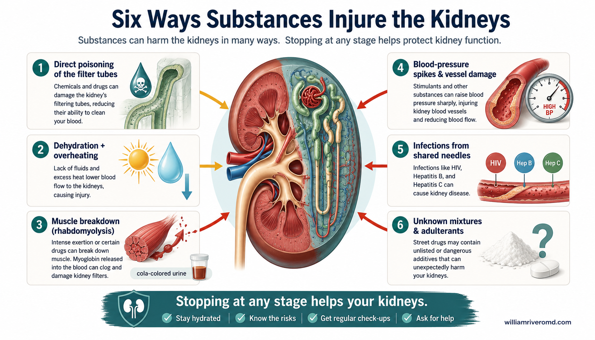
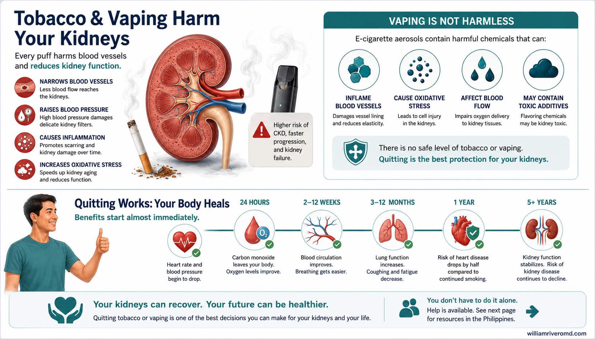
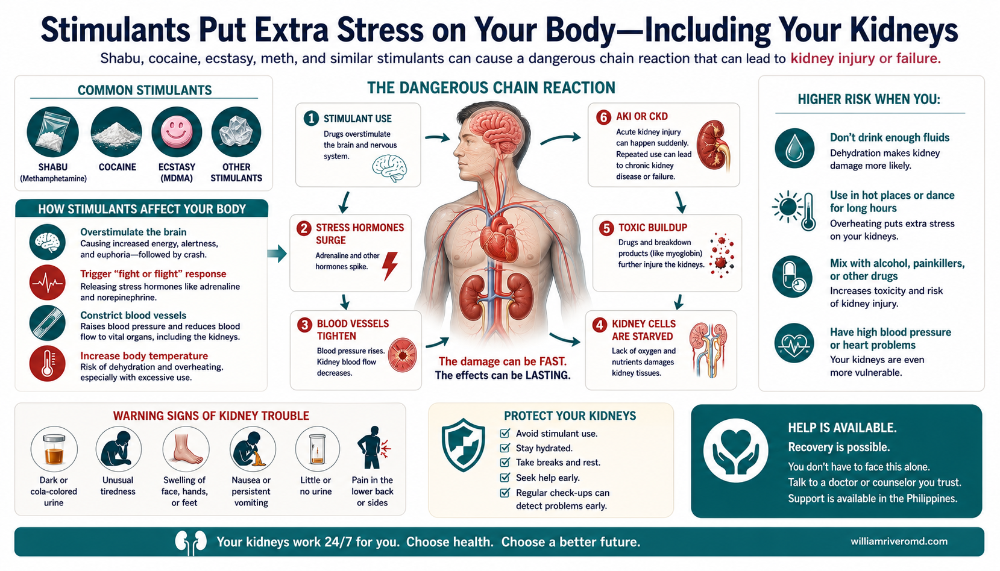
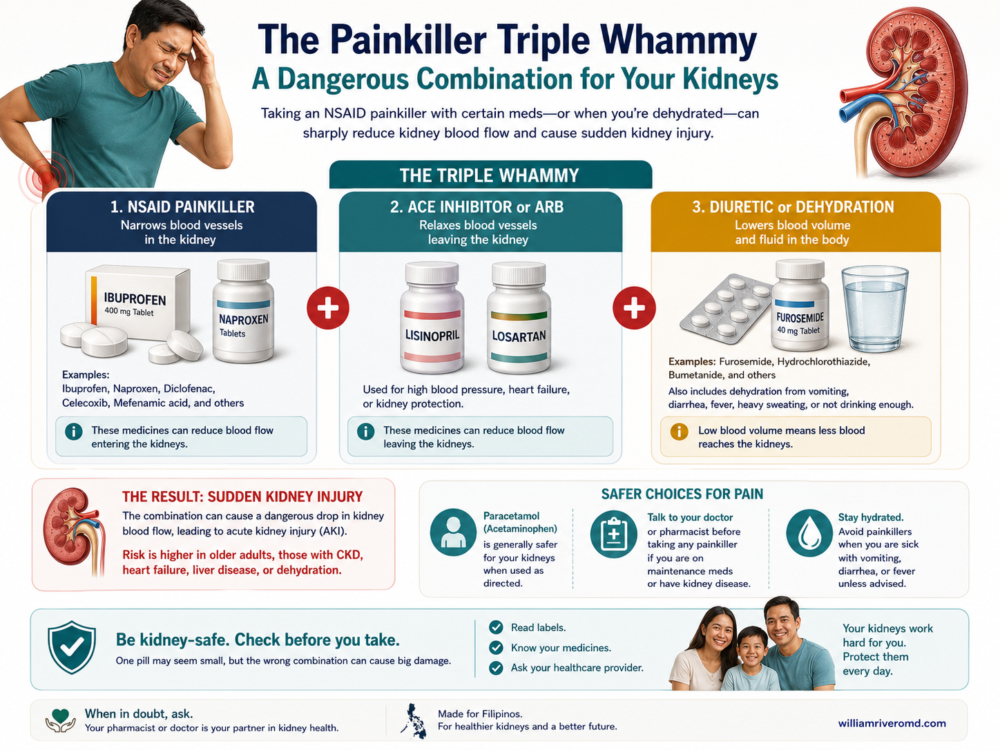
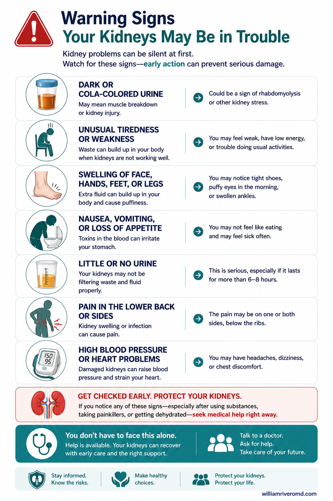
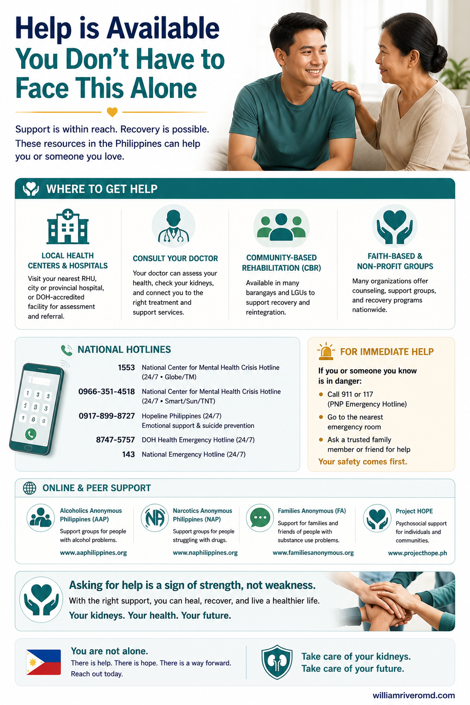

Your Kidneys Filter Everything You Take InSinasala ng Iyong Bato ang Lahat ng Pumapasok sa KatawanGisala sa Imong Kidney ang Tanan nga Imong Gisuhop sa LawasSasala ning Batu Mu Ing Anggang Sumusub King Katawan Mu
This guide is here to help you, not to judge you. Substance use disorder is a treatable medical condition — not a moral failing or a weakness. Telling your doctor honestly what you use lets them protect your kidneys and keep you safe. Nothing you share here changes the care and respect you deserve.Narito ang gabay na ito upang tulungan ka, hindi upang husgahan ka. Ang substance use disorder ay isang kondisyong medikal na nagagamot — hindi ito kasalanan o kahinaan. Kapag tapat kang nagsasabi sa iyong doktor kung ano ang ginagamit mo, mas mapoprotektahan nila ang iyong bato at maililigtas ka nila. Walang anumang sasabihin mo dito ang magbabago sa pangangalaga at paggalang na nararapat sa iyo.Kining giya ania dinhi aron motabang kanimo, dili aron mohukom kanimo. Ang substance use disorder usa ka matambalan nga kondisyon sa panglawas — dili kini sala o kahuyang. Kon matinud-anon ka nga mosulti sa imong doktor kon unsa ang imong gigamit, mapanalipdan nila ang imong kidney ug maluwas ka. Walay imong isulti dinhi nga makausab sa pag-atiman ug pagtahod nga angay kanimo.Ing giya a ini atyu keni para saupan da ka, ali para usigan da ka. Ing substance use disorder metung yang kondisyong medikal a agyung lunasan — ali ya kasalanan o kakulangan. Nung tapat kang magsabi king doktor mu nung nanu ing gagamitan mu, mapanatili dang mayap ing batu mu at iligtas da ka. Alang nanumang sabian mu keni ing maglio king pamaglingap at galang a sukat keka.
Two organs do most of the work of clearing drugs, alcohol, smoke, and chemicals from your body: your liver and your kidneys. Whatever you swallow, smoke, inject, or inhale eventually travels in your blood to the kidneys, where it is filtered and either kept or passed out in your urine. Healthy kidneys handle this load quietly, day after day.May dalawang organ na gumagawa ng halos lahat ng trabaho sa paglilinis ng droga, alak, usok, at kemikal sa iyong katawan: ang iyong atay at ang iyong bato. Anuman ang inumin, hititin, iturok, o langhapin mo ay dumadaloy sa iyong dugo papunta sa bato, kung saan ito sinasala at itinatabi o inilalabas kasama ng iyong ihi. Ang malusog na bato ay tahimik na hinahawakan ang trabahong ito, araw-araw.Duha ka organ ang naghimo sa kadaghanan sa trabaho sa paglimpyo sa droga, alak, aso, ug kemikal gikan sa imong lawas: ang imong atay ug ang imong kidney. Bisan unsa ang imong tulonon, suyopon, iturok, o ginhawaon, moagi kini sa imong dugo padulong sa kidney, diin gisala kini ug gitipigan o gipagawas uban sa imong ihi. Ang himsog nga kidney malinawon nga nagdumala niini nga buluhaton, adlaw-adlaw.Aduang organ ing gagawa king kalakit ning dapat king pamaglinis da reng droga, alak, asuk, at kemikal king katawan mu: ing atay mu at ing batu mu. Nanuman ing inumin, sigup, turuk, o singhutan mu, sasalese ya king daya mu papunta king batu, nung nu ya sasala at itabi o ilual kayabe ning imi mu. Ding masalese a batu, tahimik dang gagawan ini, aldo-aldo.
When you live with chronic kidney disease (CKD), your kidneys already work with less reserve. They have fewer healthy filters left, so the same dose that a young, healthy person clears easily can build up and do damage in you. The margin for harm is smaller — a single heavy night, a contaminated batch, or a few weeks of regular use can push struggling kidneys over the edge.Kapag may chronic kidney disease (CKD) ka, mas kaunti na ang reserba ng iyong bato. Mas kaunti na ang natitirang malulusog na salaan, kaya't ang parehong dosis na madaling naililinis ng isang bata at malusog na tao ay maaaring umipon at makasira sa iyo. Mas makitid ang puwang para sa kapahamakan — ang isang mabigat na gabi, isang kontaminadong batch, o ilang linggo ng regular na paggamit ay maaaring magtulak sa nahihirapang bato sa bingit.Kon nagpuyo ka uban sa chronic kidney disease (CKD), ang imong kidney naa nay gamay nga reserba. Gamay na lang ang nahabilin nga himsog nga salaan, busa ang samang dosis nga sayon mahawa sa batan-on, himsog nga tawo mahimong magtigom ug makadaot kanimo. Mas pig-ot ang luna alang sa kadaot — usa ka bug-at nga gabii, usa ka kontaminadong batch, o pipila ka semana sa regular nga paggamit makatulod sa naglisod nga kidney sa ngilit.Nung atin kang chronic kidney disease (CKD), ing batu mu atin nang kaduting reserba. Kaduti na lang ding mitagan a masalese a sasala, anya ing parehung dosis a malagua dang lilinisan da reng anak at masalese a tau, malyaring mag-ipun at makasira keka. Mas makitid ing lugal para king kapahamakan — metung a mabayat a bengi, metung a kontaminadung batch, o pilan a domingu a regular a pamangamit malyaring itulak ne ing maganakang batu king ngilit.
That smaller margin is exactly why this conversation matters. Knowing what you use — even just a little, even just sometimes — helps your care team adjust your medicines, watch your blood tests more closely, and warn you about the substances most dangerous for your kidneys. The goal is never to scare you. It is to give you clear facts and real options, so you can protect the kidney function you still have.Ang mas makitid na puwang na iyon ang mismong dahilan kung bakit mahalaga ang usapang ito. Ang pag-alam kung ano ang ginagamit mo — kahit kaunti lang, kahit paminsan-minsan lang — ay tumutulong sa iyong care team na i-ayos ang iyong mga gamot, mas malapitang bantayan ang iyong mga blood test, at balaan ka tungkol sa mga substansyang pinakamapanganib para sa iyong bato. Ang layunin ay hindi para takutin ka. Ito ay para bigyan ka ng malinaw na katotohanan at tunay na opsyon, upang mapangalagaan mo ang natitira pang gana ng iyong bato.Kanang mas pig-ot nga luna mao gyud ang hinungdan nganong importante kining panag-istoryahanay. Ang pagkahibalo kon unsa ang imong gigamit — bisan gamay ra, bisan usahay ra — makatabang sa imong care team sa pag-adjust sa imong mga tambal, mas duol nga pagbantay sa imong mga blood test, ug pagpasidaan kanimo bahin sa mga substansiya nga labing peligroso sa imong kidney. Ang tumong dili gayud aron hadlokon ka. Kini aron hatagan ka ug klaro nga mga kamatuoran ug tinuod nga mga kapilian, aron mapanalipdan nimo ang nahabilin pa nga gana sa imong kidney.Ing mas makitid a lugal a yan ing mismung sangkan nung bakit mahalaga ining pamisabi. Ing pamibalu nung nanu ing gagamitan mu — maski kaduti la mu, maski misan-misan mu — saupan na ne ing care team mu para i-adjust da reng tambal mu, mas malapit dang bantayan ding blood test mu, at balaan da ka king deng substansiyang pekamapanganib king batu mu. Ing layun e para takutan da ka. Ini para bie da kang malinong a katutuan at tutung opsiyon, ba mu maprotektan ing mitagan pang gana ning batu mu.
Six Ways Substances Injure the KidneysAnim na Paraan Kung Paano Nakakasira ng Bato ang mga SubstansyaUnom ka Paagi nga Makadaot sa Kidney ang mga SubstansiyaAnam a Paralan Nung Makananu Makasira King Batu Ding Substansiya

Substances do not all harm the kidneys the same way. Knowing the main pathways helps you and your doctor spot trouble early and choose safer habits. Here are the six most common.Hindi lahat ng substansya ay nakakasira ng bato sa parehong paraan. Ang pag-alam sa mga pangunahing daan ay tumutulong sa iyo at sa iyong doktor na matukoy ang problema nang maaga at pumili ng mas ligtas na gawi. Narito ang anim na pinakakaraniwan.Dili tanan nga substansiya makadaot sa kidney sa samang paagi. Ang pagkahibalo sa mga nag-unang agianan makatabang kanimo ug sa imong doktor sa pagtimaan sa problema og sayo ug pagpili ug mas luwas nga batasan. Ania ang unom nga labing kasagaran.Ali la ngan ding substansiya makasira king batu king parehung paralan. Ing pamibalu da reng pekamaragul a dalan saupan da ka at ing doktor mu para abalu ing problema agad at mamili kareng mas ligtas a ugali. Atyu la deng anam a pekakaraniwan.
1. Direct Poisoning of the Filter Tubes1. Tuwirang Paglason sa mga Tubo ng Salaan1. Direktang Paghilo sa mga Tubo sa Salaan1. Direktang Pamaglason Kareng Tubu Ning Sasala
Solvents, glue, paint thinner, and chemicals hidden in contaminated street drugs can poison the tiny tubes (tubules) that filter your blood. The damaged tubes leak or shut down, sometimes within hours.Ang mga solvent, pandikit, paint thinner, at kemikal na nakatago sa kontaminadong street drugs ay maaaring makalason sa maliliit na tubo (tubules) na sumasala sa iyong dugo. Ang nasirang tubo ay tumatagas o tumitigil, minsan sa loob lamang ng ilang oras.Ang mga solvent, pandikit, paint thinner, ug kemikal nga gitago sa kontaminadong street drugs makahilo sa gagmay nga tubo (tubules) nga nagsala sa imong dugo. Ang nadaot nga tubo motulo o moundang, usahay sulod lang sa pipila ka oras.Ding solvent, pandikit, paint thinner, at kemikal a misalikut kareng kontaminadung street drugs malyaring lasunan da reng maragul-dikilang tubu (tubules) a sasala king daya mu. Ding mesirang tubu, tutulu o tutuknang, misan king lub mu ning pilan a oras.
2. Dehydration and Overheating2. Dehydration at Sobrang Init2. Dehydration ug Sobrang Init2. Dehydration at Sobrang Init
Stimulants like shabu, cocaine, and ecstasy, especially during all-night use, make you sweat, skip drinking water, and overheat. Dehydration plus heat can starve the kidneys of blood flow and cause sudden kidney injury.Ang mga stimulant tulad ng shabu, cocaine, at ecstasy, lalo na kapag buong gabing paggamit, ay nagpapapawis sa iyo, nagpapaiwas sa pag-inom ng tubig, at nagpapasobra sa init. Ang dehydration kasama ng init ay maaaring magbawas ng daloy ng dugo sa bato at magdulot ng biglaang pinsala sa bato.Ang mga stimulant sama sa shabu, cocaine, ug ecstasy, ilabi na sa tibuok gabii nga paggamit, makapasingot kanimo, makapalaktaw sa pag-inom ug tubig, ug makapainit pag-ayo. Ang dehydration uban sa kainit makawala sa pag-agos sa dugo ngadto sa kidney ug makahatag ug kalit nga kadaot sa kidney.Ding stimulant a anti ning shabu, cocaine, at ecstasy, lalu na nung buntuk-bengi a pamangamit, papawisan da ka, palaktawan da ka king pamaginum danum, at palaknitan da ka. Ing dehydration kayabe ning init malyaring babawasan ne ing pamagdaya king batu at magdulut biglang pamiyasira king batu.
3. Muscle Breakdown (Rhabdomyolysis)3. Pagkasira ng Kalamnan (Rhabdomyolysis)3. Pagkadaot sa Kaunoran (Rhabdomyolysis)3. Pamiyasira Ning Laman (Rhabdomyolysis)
Stimulants, seizures, or lying motionless for hours can make muscle tissue break apart. It releases a protein called myoglobin that clogs the kidney filters. A warning sign is dark, cola-colored urine — get help right away.Ang mga stimulant, kombulsiyon, o pananatiling hindi gumagalaw nang ilang oras ay maaaring magdulot ng pagkasira ng kalamnan. Naglalabas ito ng protina na tinatawag na myoglobin na bumabara sa mga salaan ng bato. Isang babala ang madilim, kulay-cola na ihi — humingi agad ng tulong.Ang mga stimulant, kombulsiyon, o paghigda nga walay lihok sulod sa pipila ka oras makapadaot sa unod sa kaunoran. Mogawas kini ug protina nga gitawag og myoglobin nga magbara sa mga salaan sa kidney. Usa ka timailhan ang ngitngit, kolor-cola nga ihi — pangayo og tabang dayon.Ding stimulant, kombulsiyon, o pamananatiling ali kikilos king pilan a oras malyaring magdulut pamiyasira ning laman. Maglual yang protina a aus na rang myoglobin a babara kareng sasala ning batu. Metung a babala ing madalumdum, kulay-cola a imi — mangayli kang saup agad.
4. Blood-Pressure Spikes and Vessel Damage4. Pagtaas ng Presyon at Pinsala sa Daluyan ng Dugo4. Pagsaka sa Presyon ug Kadaot sa Ugat sa Dugo4. Pamantas Ning Presyon at Pamiyasira King Ugat Ning Daya
Stimulants and nicotine cause sharp blood-pressure spikes and squeeze the small blood vessels inside the kidneys. Over time this scars the delicate filters and speeds up kidney decline.Ang mga stimulant at nikotina ay nagdudulot ng matinding pagtaas ng presyon ng dugo at humihigpit sa maliliit na daluyan ng dugo sa loob ng bato. Sa paglipas ng panahon, pinipilat nito ang maseselang salaan at pinabibilis ang paghina ng bato.Ang mga stimulant ug nicotine maghatag ug kusog nga pagsaka sa presyon sa dugo ug mopisil sa gagmay nga ugat sa dugo sulod sa kidney. Sa paglabay sa panahon, mopilat kini sa pino nga mga salaan ug mopadali sa pagkahuyang sa kidney.Ding stimulant at nikotina magdulut lang masakit a pamantas ning presyon ning daya at sasakalan da reng maragul-dikilang ugat ning daya king lub ning batu. King pamlabas ning panaun, pipilatan da reng maselang sasala at pasibayuan da ing pamiyananip ning batu.
5. Infections from Sharing Needles5. Impeksyon mula sa Paghihiraman ng Karayom5. Impeksyon gikan sa Pag-ambit sa Dagom5. Impeksiyon Ibat King Pamipahiram Karayum
Sharing needles can pass on HIV and hepatitis B and C. These infections can directly inflame and scar the kidneys. Never sharing needles, and getting tested, protects both you and your kidneys.Ang paghihiraman ng karayom ay maaaring magpasa ng HIV at hepatitis B at C. Ang mga impeksyong ito ay maaaring direktang magpamaga at pumilat sa bato. Ang hindi paghihiraman ng karayom, at ang pagpapasuri, ay nagpoprotekta sa iyo at sa iyong bato.Ang pag-ambit sa dagom makapasa ug HIV ug hepatitis B ug C. Kining mga impeksyon makahubag ug makapilat direkta sa kidney. Ang dili pag-ambit sa dagom, ug ang pagpa-test, manalipod kanimo ug sa imong kidney.Ing pamipahiram karayum malyaring mipasa HIV at hepatitis B at C. Deng impeksiyong deni malyaring direktang mamaga at pilatan da ing batu. Ing eka pamipahiram karayum, at ing pamagpasuri, mangaglio keka at king batu mu.
6. Unknown Mixtures and Adulterants6. Hindi Alam na mga Halo at Adulterant6. Wala Mailhi nga mga Sagol ug Adulterant6. Ali Balung Halu at Adulterant
Street drugs are rarely pure. They are often cut with toxic powders, heavy metals, or stronger drugs you did not expect. You cannot know what your kidneys are filtering, which makes every dose a gamble.Ang street drugs ay bihirang dalisay. Madalas itong hinahaluan ng nakakalasong pulbos, mabibigat na metal, o mas malakas na droga na hindi mo inaasahan. Hindi mo malalaman kung ano ang sinasala ng iyong bato, na ginagawang sugal ang bawat dosis.Ang street drugs talagsa ra putli. Sagad kini gisagolan ug makahilo nga pulbos, bug-at nga metal, o mas kusog nga droga nga wala nimo damha. Dili nimo mahibal-an kon unsa ang gisala sa imong kidney, nga maghimo sa matag dosis nga usa ka sugal.Ding street drugs malagad lang malinis. Pirmi lang dang halu-halu makalasong pulbus, mabayat a metal, o mas masikan a droga a ali mu inaasahan. Ali mu abalu nung nanu ing sasala ning batu mu, anya gagawan na ning balang dosis a metung a sugal.
Here is the hopeful part: stopping at any point helps. Your kidneys begin to recover from many of these harms once the substance is out of your system. You do not have to be perfect — every day you cut back or skip is a real win for your kidneys, and your care team is ready to help you do it.Narito ang nakapagpapaasa na bahagi: ang pagtigil sa anumang punto ay nakakatulong. Nagsisimulang gumaling ang iyong bato mula sa marami sa mga pinsalang ito kapag wala na ang substansya sa iyong katawan. Hindi mo kailangang maging perpekto — bawat araw na binabawasan o nilalaktawan mo ay tunay na panalo para sa iyong bato, at handa ang iyong care team na tulungan kang gawin ito.Ania ang malaumon nga bahin: ang pag-undang sa bisan unsang punto makatabang. Ang imong kidney magsugod sa pag-ayo gikan sa daghan niini nga mga kadaot inig kawala sa substansiya sa imong lawas. Dili kinahanglan nga perpekto ka — matag adlaw nga imong gikunhuran o gilaktawan usa ka tinuod nga kadaugan alang sa imong kidney, ug andam ang imong care team sa pagtabang kanimo.Atyu ing makapagmaragul-pamanaya a parte: ing pamituknang king nanumang punto makasaup. Ing batu mu magumpisa yang gumaling ibat king dakal kareng pamiyasirang deni nung ala na ing substansiya king katawan mu. Ali mu kailangang maging perpektu — balang aldo a babawasan o lalaktawan mu, tutung pamanalu ya para king batu mu, at handa ne ing care team mu para saupan da ka.
Tobacco, Vaping & NicotineTabako, Vaping at NikotinaTabako, Vaping ug NicotineTabaku, Vaping at Nikotina

Smoking is one of the strongest things that speeds up CKD and raises the risk of eventual kidney failure. The damage comes from nicotine and the many other chemicals in smoke, which raise blood pressure and slowly scar the kidney's blood vessels. The harm is worst for people who also have diabetes or high blood pressure — and many people with CKD have both.Ang paninigarilyo ay isa sa pinakamalakas na bagay na nagpapabilis ng CKD at nagtataas ng panganib ng kalaunang pagpalya ng bato. Ang pinsala ay nagmumula sa nikotina at sa maraming iba pang kemikal sa usok, na nagtataas ng presyon ng dugo at dahan-dahang pumipilat sa mga daluyan ng dugo ng bato. Pinakamalala ang pinsala sa mga taong may diabetes o mataas na presyon din — at marami sa mga may CKD ang may pareho.Ang pagpanigarilyo usa sa labing kusog nga butang nga magpadali sa CKD ug magpataas sa risgo sa kataposang pagkapakyas sa kidney. Ang kadaot gikan sa nicotine ug sa daghang ubang kemikal sa aso, nga magpataas sa presyon sa dugo ug hinay-hinay nga magpilat sa mga ugat sa dugo sa kidney. Labing grabe ang kadaot sa mga tawo nga adunay diabetes o taas nga presyon usab — ug daghan sa mga adunay CKD ang naa silang duha.Ing pamaninigarilyu metung ya kareng pekamasikan a bage a pasibayu king CKD at pantas king panganib ning kayatasan a pamagpalya ning batu. Ing pamiyasira manibat ya king nikotina at kareng dakal pang kemikal king asuk, a pantas king presyon ning daya at marayun-dayun mamilat kareng ugat ning daya ning batu. Pekagrabe ya ing pamiyasira kareng taung atin muring diabetes o matas a presyon — at dakal kareng atin CKD ing atin la pareho.
Vaping is not a safe substitute. E-cigarettes still deliver nicotine, and nicotine itself raises blood pressure and tightens the small blood vessels feeding the kidneys, cutting their blood supply. Vape liquids also contain flavoring chemicals and metals whose long-term effects on the kidneys are still being studied. "Switching to vape" does not protect your kidneys the way quitting does.Ang vaping ay hindi ligtas na kapalit. Ang e-cigarettes ay naghahatid pa rin ng nikotina, at ang nikotina mismo ay nagtataas ng presyon ng dugo at humihigpit sa maliliit na daluyan ng dugo na nagpapakain sa bato, na binabawasan ang kanilang suplay ng dugo. Ang vape liquids ay naglalaman din ng kemikal na pampalasa at metal na ang pangmatagalang epekto sa bato ay pinag-aaralan pa. Ang "paglipat sa vape" ay hindi nagpoprotekta sa iyong bato tulad ng pagtigil.Ang vaping dili luwas nga puli. Ang e-cigarettes naghatag gihapon ug nicotine, ug ang nicotine mismo magpataas sa presyon sa dugo ug mopisil sa gagmay nga ugat sa dugo nga magpakaon sa kidney, nga makunhuran ang ilang suplay sa dugo. Ang vape liquids adunay usab kemikal nga pampalasa ug metal nga ang dugay nga epekto sa kidney gitun-an pa. Ang "pagbalhin sa vape" dili manalipod sa imong kidney sama sa pag-undang.Ing vaping ali yang ligtas a kapalit. Ding e-cigarettes maghatud la pamu nikotina, at ing nikotina mismu pantas king presyon ning daya at sasakalan da reng maragul-dikilang ugat ning daya a magpakan king batu, a babawasan ing suplay dang daya. Ding vape liquids atin la muring kemikal a pampalasa at metal a ing maluat a epektu king batu pag-aralan da pamu. Ing "pamalit king vape" ali na ne mangaglio ing batu mu anti ning pamituknang.
Secondhand smoke matters too. Breathing in the smoke of family members at home raises blood pressure and harms blood vessels in the same way, especially for children, elders, and anyone already living with kidney disease. Making your home smoke-free protects everyone's kidneys, not just your own.Mahalaga rin ang secondhand smoke. Ang paglanghap ng usok ng mga kapamilya sa bahay ay nagtataas ng presyon ng dugo at nakakasira sa mga daluyan ng dugo sa parehong paraan, lalo na sa mga bata, matatanda, at sinumang may sakit na sa bato. Ang paggawa ng iyong tahanan na smoke-free ay nagpoprotekta sa bato ng lahat, hindi lang sa iyo.Importante usab ang secondhand smoke. Ang pagginhawa sa aso sa mga membro sa pamilya sa balay magpataas sa presyon sa dugo ug makadaot sa mga ugat sa dugo sa samang paagi, ilabi na sa mga bata, tigulang, ug bisan kinsa nga adunay sakit na sa kidney. Ang paghimo sa imong balay nga smoke-free manalipod sa kidney sa tanan, dili lang kanimo.Mahalaga ya muring ing secondhand smoke. Ing pamanyinghut king asuk da reng kapamilya king bale pantas king presyon ning daya at makasira kareng ugat ning daya king parehung paralan, lalu na kareng anak, matua, at ninuman a atin nang sakit king batu. Ing pamagawang smoke-free ning bale mu mangaglio king batu da reng anggang tau, ali mu keka.
Quitting WorksGumagana ang PagtigilMolihok ang Pag-undangMag-andar Ya Ing Pamituknang
✅ It is never too late✅ Hindi pa huli ang lahat✅ Dili pa ulahi ang tanan✅ Ali pa tula ing anggang bage
Even in established CKD, quitting smoking slows the rate of kidney decline — the kidneys you have today can last longer than they would if you kept smoking. Many of the benefits, like lower blood pressure and better blood flow, start within just a few weeks.Kahit sa naitatag nang CKD, ang pagtigil sa paninigarilyo ay nagpapabagal sa bilis ng paghina ng bato — ang bato na mayroon ka ngayon ay maaaring tumagal nang mas matagal kaysa kung magpapatuloy kang manigarilyo. Marami sa mga benepisyo, tulad ng mas mababang presyon at mas magandang daloy ng dugo, ay nagsisimula sa loob lang ng ilang linggo.Bisan sa naestablisar nga CKD, ang pag-undang sa pagpanigarilyo magpahinay sa rate sa pagkahuyang sa kidney — ang kidney nga naa nimo karon mahimong molungtad og mas dugay kay sa kon magpadayon ka sa pagpanigarilyo. Daghan sa mga benepisyo, sama sa ubos nga presyon ug mas maayong pag-agos sa dugo, magsugod sulod lang sa pipila ka semana.Maski king metatag nang CKD, ing pamituknang king pamaninigarilyu pababalan na ne ing bilis ning pamiyananip ning batu — ing batu a atin ka ngeni malyaring mas maluat kaysa nung magpatuloy kang maninigarilyu. Dakal kareng benepisyu, anti ning mas mababang presyon at mas mayap a pamagdaya, mag-umpisa la king lub ning pilan a domingu.
Quitting is hard, and you do not have to do it on willpower alone. Ask your doctor about quit support — counseling, nicotine patches or gum, and safe medicines that can double your chances of success. You can also call the DOH Quitline at 1558 for free coaching (please confirm the current number with your clinic, as it may change). Slips are normal; what matters is trying again.Mahirap ang pagtigil, at hindi mo kailangang gawin ito sa lakas ng loob lamang. Tanungin ang iyong doktor tungkol sa quit support — counseling, nicotine patch o gum, at ligtas na mga gamot na maaaring magdoble ng iyong tsansa ng tagumpay. Maaari ka ring tumawag sa DOH Quitline sa 1558 para sa libreng coaching (mangyaring kumpirmahin ang kasalukuyang numero sa iyong klinika, dahil maaaring magbago ito). Normal ang mga pagkadulas; ang mahalaga ay subukan muli.Lisod ang pag-undang, ug dili kinahanglan nga buhaton nimo kini sa kusog sa kabubut-on lamang. Pangutana sa imong doktor bahin sa quit support — counseling, nicotine patch o gum, ug luwas nga mga tambal nga makadoble sa imong kahigayonan sa kalampusan. Mahimo ka usab motawag sa DOH Quitline sa 1558 alang sa libre nga coaching (palihug kumpirma ang karon nga numero sa imong klinika, kay mahimong mausab). Normal ang mga pagkadalin-as; ang importante mao ang pagsulay pag-usab.Masakit ya ing pamituknang, at ali mu kailangang gawan ini king sikan ning lub mu mu. Kutnan me ing doktor mu tungkul king quit support — counseling, nicotine patch o gum, at ligtas a tambal a malyaring magdoble king tsansa mu king tagumpe. Malyari ka muring tumawag king DOH Quitline king 1558 para king libreng coaching (paki-kumpirma ing kasalungsungan a numeru king klinika mu, uli malyaring maglio ya). Normal la ding pamagkadulas; ing mahalaga ya ing pamagsubuk pasibayu.
Small, practical steps make quitting more doable. Pick a quit date, remove cigarettes and vapes from your home, and tell a friend or family member so they can cheer you on. Here are a few tips that help many people:Ang maliliit at praktikal na hakbang ay nagpapadali sa pagtigil. Pumili ng petsa ng pagtigil, alisin ang mga sigarilyo at vape sa iyong bahay, at sabihin sa isang kaibigan o kapamilya upang masuportahan ka nila. Narito ang ilang tip na nakakatulong sa maraming tao:Ang gagmay, praktikal nga mga lakang maghimo sa pag-undang nga mas mahimo. Pagpili ug petsa sa pag-undang, kuhaa ang mga sigarilyo ug vape gikan sa imong balay, ug sultihi ang usa ka higala o membro sa pamilya aron makasuporta sila kanimo. Ania ang pipila ka tip nga makatabang sa daghang tawo:Ding maragul-dikilang, praktikal a hakbang gagawan dang mas malyari ing pamituknang. Mamili kang petsa ning pamituknang, kuanan mu reng sigarilyu at vape king bale mu, at sabian me king metung a kaluguran o kapamilya ba da kang masuportahan. Atyu la deng pilan a tip a makasaup karing dakal a tau:
- Drink water or chew gum when a craving hits — most cravings pass in a few minutes.Uminom ng tubig o ngumuya ng gum kapag dumating ang pananabik — karamihan ng pananabik ay lumilipas sa loob ng ilang minuto.Pag-inom ug tubig o pag-usap ug gum kon moabot ang gana — kadaghanan sa gana mawala sulod sa pipila ka minuto.Minum kang danum o ngumalut kang gum nung dumatang ing kagusto — karakal kareng kagusto malabas la king lub ning pilan a minutu.
- Avoid your usual triggers at first — coffee, alcohol, or the spot where you always smoked.Iwasan muna ang iyong mga karaniwang trigger — kape, alak, o ang lugar kung saan ka palaging naninigarilyo.Likayi una ang imong naandang trigger — kape, alak, o ang dapit diin ka kanunay manigarilyo.Iwasan mu pamu reng karaniwan mung trigger — kape, alak, o ing lugal nung nu ka pirming maninigarilyu.
- Keep your hands and mouth busy with a healthy snack, a toothpick, or a quick walk.Panatilihing abala ang iyong mga kamay at bibig sa malusog na meryenda, palito, o mabilis na lakad.Padayon nga okupado ang imong mga kamot ug baba sa himsog nga meryenda, toothpick, o paspas nga lakaw.Panatilian mung okupadu reng gamat at asbuk mu king masalese a meryenda, palitu, o malagua a lakad.
- Save the money you would have spent — seeing it add up is a powerful reminder.Itabi ang perang sana'y ginastos mo — ang makita itong dumadami ay isang makapangyarihang paalala.Tipigi ang kuwarta nga unta imong gigasto — ang pagkakita niini nga modaghan usa ka gamhanan nga pahinumdom.Itabi me ing kuartang sana gastusan mu — ing pamanakit kaniti a dumaragul metung yang makapangyarihan a paalala.
- If you slip, do not give up — note what triggered it and start again the same day.Kung madulas ka, huwag sumuko — tandaan kung ano ang nag-trigger nito at magsimulang muli sa parehong araw.Kon madalin-as ka, ayaw pagsuko — timan-i kon unsa ang nagtrigger niini ug pagsugod pag-usab sa samang adlaw.Nung madulas ka, e ka sumuku — tandanan mu nung nanu ing nag-trigger kaniti at mag-umpisa kang pasibayu king parehung aldo.
Stimulants — Shabu, Cocaine & "Party" Drugs Mga Stimulant — Shabu, Cocaine at "Party" Drugs Mga Stimulant — Shabu, Cocaine ug "Party" Drugs Stimulants — Shabu, Cocaine at "Party" Drugs

Stimulants like shabu (methamphetamine), cocaine, and many "party" drugs speed up the whole body. They push your blood pressure dangerously high and force your heart to race. Right at that moment, the small blood vessels inside your kidneys can clamp down so hard that blood almost stops flowing through them. When kidneys lose their blood supply, they can be injured within hours — this is called acute kidney injury, or AKI. Ang mga stimulant tulad ng shabu (methamphetamine), cocaine, at maraming "party" drugs ay pinapabilis ang buong katawan. Itinataas nito nang delikado ang iyong presyon ng dugo at pinipilit ang iyong puso na bumilis. Sa sandaling iyon, ang maliliit na ugat sa loob ng iyong bato ay maaaring sumikip nang husto kaya halos huminto ang daloy ng dugo. Kapag nawalan ng suplay ng dugo ang bato, maaari itong masira sa loob lamang ng ilang oras — tinatawag itong acute kidney injury, o AKI. Ang mga stimulant sama sa shabu (methamphetamine), cocaine, ug daghang "party" drugs makapaspas sa tibuok lawas. Pataason niini ang imong presyon sa dugo og delikado ug pugson ang imong kasingkasing nga modagan. Niana mismong gutloa, ang gagmay nga ugat sa sulod sa imong kidney mahimong mosikip pag-ayo nga hapit na mohunong ang dagan sa dugo. Kon mawad-an og suplay sa dugo ang kidney, madaot kini sulod lang sa pipila ka oras — gitawag kini og acute kidney injury, o AKI. Ding stimulant a anti mo ing shabu (methamphetamine), cocaine, at dakal a "party" drugs pepasibayu da ing mabilug a katawan. Pepalwal da nang delikadu ing presion ning daya mu at pepilitan da ing pusu mung mabilis. King oras a ita, ding malating ugat king kilub ning bato mu malyaring sumipit nang masican kaya halus tumuknang ing dalan ning daya. Nung mawala ing suplay ning daya king bato, malyaring masira ya kilub mu ning pilang oras — aus da ya ini acute kidney injury, o AKI.
Stimulants also overheat the body and make muscles work overtime. The muscles can break down and dump a protein called myoglobin into the blood — a condition called rhabdomyolysis. That protein clogs the kidney's filters like mud in a strainer, and the kidneys can shut down fast. In our hot, humid Philippine climate, this danger is much bigger: an all-night session, sweating heavily, drinking little or no water, and using a stimulant is a recipe for sudden kidney failure. Pinapainit din ng mga stimulant ang katawan at pinipilit ang mga kalamnan na magtrabaho nang sobra. Maaaring masira ang mga kalamnan at maglabas ng protina na tinatawag na myoglobin sa dugo — isang kondisyon na tinatawag na rhabdomyolysis. Bina-barahan ng protinang ito ang mga salaan ng bato tulad ng putik sa salaan, at maaaring biglang huminto ang bato. Sa ating mainit at maalinsangang klima sa Pilipinas, mas malaki ang panganib na ito: ang magpuyat buong gabi, pawisang-pawis, kaunti o walang inumin na tubig, at gumamit ng stimulant ay tiyak na daan tungo sa biglaang pagpalya ng bato. Pinit-on usab sa mga stimulant ang lawas ug pugson ang mga kaunoran nga molihok og sobra. Mahimong madaot ang mga kaunoran ug mobuga og protina nga gitawag og myoglobin sa dugo — usa ka kahimtang nga gitawag og rhabdomyolysis. Kining protina mosampong sa mga salaan sa kidney sama sa lapok sa salaan, ug mahimong mohunong ang kidney dayon. Sa atong init ug humid nga klima sa Pilipinas, mas dako kining peligro: ang pagpuyat tibuok gabii, singot kaayo, gamay o walay imnon nga tubig, ug paggamit og stimulant maoy sigurado nga dalan paingon sa kalit nga pagkahurot sa kidney. Pepalto da naman ding stimulant ing katawan at pepilitan da ding kalamnan a mag-obra nang sobra. Malyaring masira ding kalamnan at maglwal lang protina a aus dang myoglobin king daya — metung yang kondisyon a aus dang rhabdomyolysis. Babaratan na ning protinang ini ding salaan ning bato anti mo ing pisak king salaan, at malyaring biglang tumuknang ing bato. King kekatamung mapali at maalinsangan a klima king Filipinas, mas maragul ya ing peligrung ini: ing magpuyat buung bengi, pawasang-pawas, ditak o alang inumang danum, at gumamit lang stimulant metung yang siguradung dalan papunta king biglang pamagkasira ning bato.
Over months and years, repeated use leaves lasting scars on the kidneys' blood vessels and filters. The kidneys begin to leak protein into the urine — an early warning sign of permanent kidney disease. The good news is real: stimulant use disorder is a treatable medical condition, not a weakness. Many people stop, and the body can recover a great deal — especially the sooner you reach out for help. You are not alone, and asking for help is a sign of strength. Sa paglipas ng buwan at taon, ang paulit-ulit na paggamit ay nag-iiwan ng pangmatagalang peklat sa mga ugat at salaan ng bato. Nagsisimulang tumagas ang protina sa ihi — isang maagang babala ng permanenteng sakit sa bato. Tunay ang magandang balita: ang stimulant use disorder ay isang kondisyong medikal na nagagamot, hindi kahinaan. Maraming tao ang tumitigil, at ang katawan ay maaaring gumaling nang malaki — lalo na kung mas maaga kang humingi ng tulong. Hindi ka nag-iisa, at ang paghingi ng tulong ay tanda ng lakas. Sa paglabay sa mga bulan ug tuig, ang balik-balik nga paggamit magbilin og malungtarong uwat sa mga ugat ug salaan sa kidney. Magsugod nga motulo ang protina sa ihi — usa ka sayong pasidaan sa permanente nga sakit sa kidney. Tinuod ang maayong balita: ang stimulant use disorder usa ka medikal nga kahimtang nga matambalan, dili kahuyang. Daghang tawo ang mihunong, ug ang lawas mahimong maulian og dako — labi na kon mas sayo ka mangayo og tabang. Dili ka nag-inusara, ug ang pagpangayo og tabang timailhan sa kalig-on. King pamanlabas da ring bulan at banua, ing paulit-ulit a pamaggamit mibilin yang malwat a uwat king ugat at salaan ning bato. Mumulang tumagas ing protina king mihi — metung yang maagang babala ning permanenteng sakit king bato. Tutu ya ing mayap a balita: ing stimulant use disorder metung yang kondisyon medikal a agyang mayari, ali yang kalupayan. Dakal a tau ing tutuknang, at ing katawan malyaring magaling nang maragul — lalu na nung mas maaga kang mamye tulung. Ali ka mag-isa, at ing pamaniluk tulung tanda ya ning sikanan.
⚠️ Emergency — Go to the ER NowEmergency — Pumunta sa ER NgayonEmergency — Adto sa ER KaronEmergency — Munta na ka king ER
Get to the nearest emergency room right away if you or someone else has used a stimulant and shows: chest pain, a pounding or irregular heartbeat, confusion or seizures, very high blood pressure, severe muscle pain or weakness, or dark, tea- or cola-colored urine. These can mean a heart attack, a stroke, or sudden kidney failure. Do not wait — every minute matters, and no one will judge you. The goal is simply to keep you alive and safe. Pumunta agad sa pinakamalapit na emergency room kung ikaw o ibang tao ay gumamit ng stimulant at may: pananakit ng dibdib, mabilis o iregular na tibok ng puso, pagkalito o seizure, napakataas na presyon ng dugo, matinding sakit o panghihina ng kalamnan, o maitim, kulay-tsaa o kulay-cola na ihi. Maaaring ito ay atake sa puso, stroke, o biglaang pagpalya ng bato. Huwag maghintay — mahalaga ang bawat minuto, at walang huhusga sa iyo. Ang layunin ay panatilihin kang buhay at ligtas. Adto dayon sa pinakaduol nga emergency room kon ikaw o lain nga tawo migamit og stimulant ug adunay: sakit sa dughan, paspas o iregular nga pitik sa kasingkasing, kalibog o seizure, taas kaayo nga presyon sa dugo, grabe nga sakit o kaluya sa kaunoran, o itom, kolor-tsa o kolor-cola nga ihi. Mahimong kini atake sa kasingkasing, stroke, o kalit nga pagkahurot sa kidney. Ayaw paghulat — importante ang matag minuto, ug walay mohukom kanimo. Ang tumong mao ang pagtipig kanimo nga buhi ug luwas. Munta na ka agad king pekamalapit a emergency room nung ika o aliwang tau migamit lang stimulant at atin: sakit ning salu, mabilis o iregular a pitik ning pusu, lito o seizure, matas a presion ning daya, masakit o malupa kalamnan, o maitim, kulé-tsa o kulé-cola a mihi. Malyaring ini atake king pusu, stroke, o biglang pamagkasira ning bato. E ka maintat — importante ya ing balang minutu, at alang mukum keka. Ing tudtud mu ya ing manatiling mabie at ligtas.
Right now (acute) Sa ngayon (acute) Karon dayon (acute) Ngeni (acute)
- Dangerously high blood pressure and racing heartNapakataas na presyon at mabilis na tibok ng pusoTaas kaayo nga presyon ug paspas nga pitik sa kasingkasingMatas a presion at mabilis a pitik ning pusu
- Sudden kidney injury (AKI) from blocked blood flowBiglaang pinsala sa bato (AKI) dahil sa hadlang sa daloy ng dugoKalit nga kadaot sa kidney (AKI) tungod sa babag sa dagan sa dugoBiglang pinsala king bato (AKI) uli ning sablat king dalan ning daya
- Muscle breakdown (rhabdomyolysis) clogging the filtersPagkasira ng kalamnan (rhabdomyolysis) na bina-barahan ang salaanPagkadaot sa kaunoran (rhabdomyolysis) nga mosampong sa salaanPamagkasira ning kalamnan (rhabdomyolysis) a babaratan ing salaan
- Severe dehydration, especially in tropical heatMatinding dehydration, lalo na sa tropikal na initGrabe nga dehydration, labi na sa tropikal nga initMasakit a dehydration, lalu na king tropikal a pali
Over time (chronic) Sa paglipas ng panahon (chronic) Sa paglabay sa panahon (chronic) King pamanlabas ning panaun (chronic)
- Scarring of the kidneys' tiny blood vesselsPagkapeklat ng maliliit na ugat ng batoPagkauwat sa gagmay nga ugat sa kidneyPamag-uwat da ring malating ugat ning bato
- Protein leaking into the urine (early kidney disease)Pagtagas ng protina sa ihi (maagang sakit sa bato)Pagtulo sa protina sa ihi (sayong sakit sa kidney)Pamantagas ning protina king mihi (maagang sakit king bato)
- Steady, lasting loss of kidney functionTuluy-tuloy at pangmatagalang pagkawala ng gana ng batoPadayon ug malungtarong pagkawala sa gana sa kidneyTuluy-tuluy at malwat a pamawala ning gana ning bato
- Higher long-term risk of heart attack and strokeMas mataas na pangmatagalang panganib ng atake sa puso at strokeMas taas nga dugay nga peligro sa atake sa kasingkasing ug strokeMas matas a malwat a peligru ning atake king pusu at stroke
Opioids & Misused Painkillers Opioids at Maling Paggamit ng Pamatay-sakit Opioids ug Sayop nga Paggamit sa Pamatay-sakit Opioids at Maling Pamaggamit Pamate-sakit

There are two different painkiller dangers to know about, and both can hurt the kidneys. The first is opioids — medicines like tramadol and codeine, plus illegal opioids. When taken in too high a dose, opioids slow your breathing and drop your blood pressure. With less oxygen and lower pressure, the kidneys do not get the blood they need and can be injured. In a severe overdose, breathing can stop completely. May dalawang magkaibang panganib mula sa pamatay-sakit na dapat malaman, at parehong nakakasira sa bato. Ang una ay ang opioids — mga gamot tulad ng tramadol at codeine, pati na ang iligal na opioids. Kapag sobra ang dosis, pinapabagal ng opioids ang iyong paghinga at ibinababa ang iyong presyon ng dugo. Sa kulang na oxygen at mababang presyon, hindi nakukuha ng bato ang dugong kailangan nito at maaaring masira. Sa matinding overdose, maaaring tuluyang huminto ang paghinga. Adunay duha ka lahi nga peligro gikan sa pamatay-sakit nga angay mahibaloan, ug pareho kining makadaot sa kidney. Ang una mao ang opioids — mga tambal sama sa tramadol ug codeine, lakip ang ilegal nga opioids. Kon sobra ka taas ang dosis, pahinayon sa opioids ang imong ginhawa ug ipaubos ang imong presyon sa dugo. Sa kulang nga oxygen ug ubos nga presyon, dili makakuha ang kidney sa dugo nga gikinahanglan ug mahimong madaot. Sa grabe nga overdose, mahimong mohunong sa hingpit ang ginhawa. Atin lang adwang miyaibang peligru manibat king pamate-sakit a dapat abalu, at pareu lang makasira king bato. Ing mumuna ya ing opioids — gamut a anti mo ing tramadol at codeine, pati na ing ilegal a opioids. Nung sobra ya ing dosis, pepabagal da ring opioids ing pamanginawa mu at ibaba da ing presion ning daya mu. King kulang a oxygen at mababang presion, ali makakua ing bato king daya a kailangan na at malyaring masira. King masakit a overdose, malyaring tuluyang tumuknang ing pamanginawa.
It helps to know about naloxone — a safe medicine that can reverse an opioid overdose and restart breathing within minutes. If you or a loved one uses opioids, ask a clinic or pharmacy how to get it and how to use it. Just as important: never stop a prescribed opioid suddenly on your own. Stopping abruptly can be dangerous and very uncomfortable. Talk to your doctor first — they can help you taper down safely and treat your pain at the same time. Makakatulong na malaman ang tungkol sa naloxone — isang ligtas na gamot na maaaring mag-reverse ng opioid overdose at muling pasimulan ang paghinga sa loob ng ilang minuto. Kung ikaw o mahal mo sa buhay ay gumagamit ng opioids, magtanong sa klinika o botika kung paano ito makukuha at gagamitin. Kasinghalaga: huwag biglang itigil mag-isa ang isang reseta na opioid. Ang biglaang pagtigil ay maaaring delikado at lubhang hindi komportable. Kausapin muna ang iyong doktor — matutulungan ka nilang bawasan ito nang ligtas at gamutin ang sakit sa parehong oras. Makatabang nga mahibaloan ang naloxone — usa ka luwas nga tambal nga makabalik sa opioid overdose ug makasugod pag-usab sa ginhawa sulod sa pipila ka minuto. Kon ikaw o ang imong minahal mogamit og opioids, pangutana sa klinika o botika unsaon kini pagkuha ug paggamit. Sama ka importante: ayaw kalit nga hunonga ang gireseta nga opioid sa imong kaugalingon. Ang kalit nga paghunong mahimong delikado ug dili komportable. Pakigsulti una sa imong doktor — matabangan ka nila nga maminusan kini nga luwas ug tambalan ang imong sakit sa samang higayon. Makasaup a abalu ya ing naloxone — metung yang ligtas a gamut a malyaring mag-reverse king opioid overdose at muling pasimulan ing pamanginawa kilub ning pilang minutu. Nung ika o ing kaluguran mu gagamit lang opioids, magkutang king klinika o botika nung makananu ya akua at gamitan. Pareung importante: e me biglang patuknang dili ing reseta a opioid. Ing biglang pamantuknang malyaring delikadu at e komportable. Makisabi ka mu naman king doktor mu — asaupan da kang bawasan ya nang ligtas at lwalan ing sakit mu king pareung oras.
The second danger is the bigger problem here in the Philippines: overusing ordinary pain pills called NSAIDs. These include mefenamic acid (often sold as "Ponstan") and ibuprofen — the same tablets many of us reach for during body pain, menstrual cramps, or a hangover. Taken too often or in high doses, NSAIDs squeeze the kidneys' blood flow and slowly poison them. Over time this causes analgesic nephropathy — kidney damage from painkillers — and they can also trigger sudden AKI. This is one of the most preventable causes of kidney disease in our country. Ang pangalawang panganib ay ang mas malaking problema dito sa Pilipinas: ang sobrang paggamit ng karaniwang pamatay-sakit na tinatawag na NSAIDs. Kasama dito ang mefenamic acid (madalas ibinebenta bilang "Ponstan") at ibuprofen — ang parehong tableta na inaabot ng marami sa atin sa sakit ng katawan, dysmenorrhea, o hangover. Kapag sobra-sobra o malaki ang dosis, sinisikipan ng NSAIDs ang daloy ng dugo ng bato at dahan-dahan itong nilalason. Sa paglipas ng panahon nagdudulot ito ng analgesic nephropathy — pinsala sa bato mula sa pamatay-sakit — at maaari rin itong magdulot ng biglaang AKI. Isa ito sa mga pinaka-maiiwasang sanhi ng sakit sa bato sa ating bansa. Ang ikaduha nga peligro mao ang mas dako nga problema dinhi sa Pilipinas: ang sobra nga paggamit sa ordinaryo nga pamatay-sakit nga gitawag og NSAIDs. Lakip niini ang mefenamic acid (kasagaran gibaligya isip "Ponstan") ug ibuprofen — ang samang tableta nga gikuha sa daghan kanato sa sakit sa lawas, dysmenorrhea, o hangover. Kon sobra ka subsob o taas ang dosis, pislion sa NSAIDs ang dagan sa dugo sa kidney ug hinay-hinay kining hiloan. Sa paglabay sa panahon mosangpot kini og analgesic nephropathy — kadaot sa kidney gikan sa pamatay-sakit — ug mahimo usab kining hinungdan sa kalit nga AKI. Usa kini sa labing malikayan nga hinungdan sa sakit sa kidney sa atong nasod. Ing kaduang peligru ya ing mas maragul a problema keni king Filipinas: ing sobrang pamaggamit king karaniwang pamate-sakit a aus dang NSAIDs. Kayabe keni ing mefenamic acid (kareng pisali bilang "Ponstan") at ibuprofen — ing pareung tableta a yatadwan na ning dakal kekatamu king sakit ning katawan, dysmenorrhea, o hangover. Nung sobra-sobra o maragul ya ing dosis, sisikpan da ring NSAIDs ing dalan ning daya ning bato at marayu-rayu reng lalasunan. King pamanlabas ning panaun mibigay yang analgesic nephropathy — pinsala king bato manibat king pamate-sakit — at malyaring mibigay namang biglang AKI. Metung ya ini kareng pekamayayaliwan a pun ning sakit king bato king kekatamung bangsa.
Please don't suffer in silence either. Pain is real, and pain can be managed safely even if you already have CKD — your doctor can choose kidney-friendly options like paracetamol in the right dose, topical creams, physical therapy, and other approaches. The key is to plan your pain relief together rather than reaching for NSAIDs on your own. Pakiusap, huwag ka ring magdusa nang tahimik. Totoo ang sakit, at maaaring pamahalaan nang ligtas ang sakit kahit may CKD ka na — maaaring pumili ang iyong doktor ng mga opsyong magaan sa bato tulad ng paracetamol sa tamang dosis, mga pamahid, physical therapy, at iba pang paraan. Ang susi ay pagplanuhang magkasama ang lunas sa sakit kaysa basta umabot ng NSAIDs nang mag-isa. Palihug ayaw usab pag-antos sa hilom. Tinuod ang sakit, ug mahimong madumala nga luwas ang sakit bisan naa na kay CKD — mahimong magpili ang imong doktor og mga opsyon nga maayo sa kidney sama sa paracetamol sa hustong dosis, mga haplas, physical therapy, ug uban pang paagi. Ang yawe mao ang pagplano sa imong tambal sa sakit nga magkuyog imbis nga mokuha og NSAIDs sa imong kaugalingon. Pakisabi, e ka naman magdusa nang tahimik. Tutu ya ing sakit, at malyaring pamahalan nang ligtas ing sakit agyang atin na kang CKD — malyaring pumili ya ing doktor mu kareng opsion a magaan king bato a anti mo ing paracetamol king tamang dosis, kareng haplas, physical therapy, at aliwa pang paralan. Ing susi ya ing pamagplanu kayabe ning lunas king sakit imbes a basta umatad king NSAIDs nang dili.
Want to dig deeper? See our guide on NSAIDs and kidney injury, and our pain management for CKD guide, to learn exactly how to relieve pain without harming your kidneys. Gusto mong matuto pa? Tingnan ang aming gabay sa NSAIDs at pinsala sa bato, at ang aming gabay sa pamamahala ng sakit para sa CKD, para malaman kung paano talaga ibsan ang sakit nang hindi nasasaktan ang iyong bato. Gusto nimo mas masabtan pa? Tan-awa ang among giya bahin sa NSAIDs ug kadaot sa kidney, ug ang among giya sa pagdumala sa sakit para sa CKD, aron mahibaloan kon unsaon gyud pagpaubos sa sakit nga dili madaot ang imong kidney. Buri mung matutu pa? Lawan me ing kekeng giya king NSAIDs at pinsala king bato, at ing kekeng giya king pamamahala ning sakit para king CKD, ban abalu nung makananu talaga ibsan ing sakit a e masasaktan ing bato mu.
Inhalants & Solvents ("Rugby") Mga Inhalant at Solvent ("Rugby") Mga Inhalant ug Solvent ("Rugby") Mga Inhalant at Solvent ("Rugby")
Sniffing solvents — contact cement (known on the street as "rugby"), glue, gasoline, and paint thinner — sends harsh chemicals straight into the blood through the lungs. These chemicals are direct poisons to the tiny tubes inside the kidney that fine-tune the body's salts and acids. When those tubes are damaged, acid builds up in the blood, a serious condition called renal tubular acidosis. At the same time, potassium can drop dangerously low, leaving the muscles weak — sometimes too weak to walk or even breathe properly. Ang pag-amoy ng solvent — contact cement (kilala sa kalye bilang "rugby"), pandikit, gasolina, at paint thinner — ay nagpapadala ng matatapang na kemikal nang diretso sa dugo sa pamamagitan ng baga. Ang mga kemikal na ito ay tuwirang lason sa maliliit na tubo sa loob ng bato na nag-aayos ng asin at asido ng katawan. Kapag nasira ang mga tubong ito, nag-iipon ng asido sa dugo, isang seryosong kondisyon na tinatawag na renal tubular acidosis. Kasabay nito, maaaring bumaba nang delikado ang potassium, na nag-iiwan ng mahihinang kalamnan — minsan masyadong mahina para makalakad o makahinga nang maayos. Ang pagsimhot og solvent — contact cement (nailhan sa dalan isip "rugby"), pandikit, gasolina, ug paint thinner — magpadala og bagis nga kemikal diretso sa dugo pinaagi sa baga. Kining mga kemikal direkta nga hilo sa gagmay nga tubo sa sulod sa kidney nga nag-ayos sa asin ug asido sa lawas. Kon madaot kining mga tubo, magtipon og asido sa dugo, usa ka seryoso nga kahimtang nga gitawag og renal tubular acidosis. Dungan niini, mahimong mokunhod og delikado ang potassium, nga magbilin og luya nga kaunoran — usahay luya kaayo nga dili makalakaw o makaginhawa og tarong. Ing pamanangu king solvent — contact cement (kilala king dalan bilang "rugby"), pandikit, gasolina, at paint thinner — magpadala yang masican a kemikal nang diretsu king daya king pamamilatan ning baga. Deng kemikal a deni tuwirang lasun la kareng malating tubo king kilub ning bato a mag-ayos king asin at asido ning katawan. Nung masira la deng tubong deni, magtipun yang asido king daya, metung yang seryosung kondisyon a aus dang renal tubular acidosis. Kayabe na ini, malyaring kumababa nang delikadu ing potassium, a mibilin yang malupang kalamnan — aliwan masyadung malupa ban makalakad o makaginawa nang mayap.
These chemicals can also cut off the kidneys' blood supply and cause sudden kidney injury within hours. Inhalants are especially common among young people and among children and teens living on the street, often because they are cheap and easy to find. None of that is a personal failing — it is a sign that someone needs support, not blame. Ang mga kemikal na ito ay maaari ring pumutol sa suplay ng dugo ng bato at magdulot ng biglaang pinsala sa bato sa loob ng ilang oras. Karaniwan ang mga inhalant lalo na sa mga kabataan at sa mga bata at tinedyer na naninirahan sa kalye, madalas dahil mura at madaling makita. Wala roon ang kasalanan ng tao — tanda ito na may taong kailangan ng suporta, hindi sisihin. Kining mga kemikal mahimo usab nga moputol sa suplay sa dugo sa kidney ug maoy hinungdan sa kalit nga kadaot sa kidney sulod sa pipila ka oras. Komon ang mga inhalant labi na sa mga batan-on ug sa mga bata ug tin-edyer nga nagpuyo sa dalan, kasagaran tungod kay barato ug sayon makita. Wala kana sa sayop sa tawo — timailhan kini nga adunay tawo nga nanginahanglan og suporta, dili pagbasol. Deng kemikal a deni malyaring mutpul naman king suplay ning daya ning bato at mibigay yang biglang pinsala king bato kilub ning pilang oras. Karaniwan la deng inhalant lalu na kareng kayanakan at kareng anak at tinedyer a manuknangan king dalan, kareng mura at malagwang akit. Ala karin ing kasalanan ning tau — tanda ya ini a atin taung kailangan na ing suporta, ali pamanisi.
If you or someone you care about is using inhalants, please know that recovery is absolutely possible, and help is available without shame. Reaching out — to a doctor, a barangay health worker, an NGO, or a trusted adult — can be the first step back to health. There is a way forward, and you deserve support every step of the way. Kung ikaw o ang isang mahal mo ay gumagamit ng inhalant, alamin na ang paggaling ay talagang posible, at may tulong na walang kahihiyan. Ang paglapit — sa doktor, barangay health worker, NGO, o pinagkakatiwalaang nakatatanda — ay maaaring unang hakbang pabalik sa kalusugan. May daan pasulong, at karapat-dapat kang suportahan sa bawat hakbang. Kon ikaw o ang imong gimahal mogamit og inhalant, palihug hibaloi nga ang pag-ulian posible gyud, ug adunay tabang nga walay kaulaw. Ang pagduol — sa doktor, barangay health worker, NGO, o kasaligan nga hamtong — mahimong unang lakang balik sa panglawas. Adunay dalan paingon sa unahan, ug angay ka og suporta sa matag lakang. Nung ika o ing kaluguran mu gagamit yang inhalant, abalu mu a ing pamagaling talagang posible, at atin tulung a alang kaya. Ing pamanlapit — king doktor, barangay health worker, NGO, o kasaligan a matua — malyaring mumunang hakbang pabalik king katawan a malusug. Atin dalan papunta king arapan, at dapat ka misuportan king balang hakbang.
Warning signs to watch for Mga senyales ng babala na dapat bantayan Mga timailhan sa pasidaan nga angay bantayan Mga senyas ning babala a dapat bantayan
- Sudden, unexplained muscle weakness or trouble standingBiglaan at hindi maipaliwanag na panghihina ng kalamnan o hirap tumayoKalit ug dili masaysay nga kaluya sa kaunoran o lisod motindogBiglang malupa kalamnan o mahirap a pamanalakad
- Fast or heavy breathing as the body tries to clear acidMabilis o mabigat na paghinga habang sinusubukan ng katawan na alisin ang asidoPaspas o bug-at nga ginhawa samtang gisulayan sa lawas nga hawaan ang asidoMabilis o mabayat a pamanginawa habang sisubukan ning katawan alisan ing asido
- Confusion, drowsiness, or feeling faintPagkalito, antok, o pakiramdam na hihimatayinKalibog, katulgon, o gibati nga malipongLito, tudtud, o pamuyu a malipung
- Much less urine than usual, or dark-colored urineMas kaunting ihi kaysa dati, o maitim na kulay ng ihiMas gamay nga ihi kay sa naandan, o itom nga kolor sa ihiMas ditak a mihi kesa dati, o maitim a kulé ning mihi
- Irregular heartbeat or sudden chest discomfortIregular na tibok ng puso o biglaang kakulangan ng ginhawa sa dibdibIregular nga pitik sa kasingkasing o kalit nga kasakit sa dughanIregular a pitik ning pusu o biglang sakit king salu
Any of these signs means it's time to get to an emergency room right away. Ang alinman sa mga senyales na ito ay nangangahulugang oras na para pumunta agad sa emergency room. Bisan asa niini nga timailhan nagpasabot nga panahon na nga moadto dayon sa emergency room. Nanu mang senyas a deni buri nang sabian a oras na ban munta agad king emergency room.
Cannabis & Synthetic Cannabinoids Cannabis at Synthetic Cannabinoids Cannabis ug Synthetic Cannabinoids Cannabis at Synthetic Cannabinoids
Smoked cannabis (marijuana) is often thought of as harmless, but it does affect the body. The smoke irritates the lungs much like cigarettes, and it can speed up the heart and shift blood pressure — extra strain for anyone who already has heart or kidney trouble. For people with CKD, there's another concern: cannabis can interact with kidney and blood-pressure medicines, changing how well they work. Always tell your doctor honestly if you use it, so they can keep your treatment safe. Madalas iniisip na hindi nakakasama ang hinithit na cannabis (marijuana), ngunit may epekto ito sa katawan. Iniirita ng usok ang baga tulad ng sigarilyo, at maaari nitong pabilisin ang puso at baguhin ang presyon ng dugo — dagdag na pasanin para sa sinumang may sakit na sa puso o bato. Para sa mga may CKD, may isa pang alalahanin: maaaring makipag-interaksyon ang cannabis sa mga gamot sa bato at presyon, na nagbabago kung gaano sila kabisa. Laging sabihin nang tapat sa iyong doktor kung gumagamit ka, para mapanatili nilang ligtas ang iyong gamutan. Kasagaran gihunahuna nga dili makadaot ang gihithit nga cannabis (marijuana), apan adunay epekto kini sa lawas. Ang aso moirita sa baga sama sa sigarilyo, ug mahimo niining pakuspason ang kasingkasing ug usbon ang presyon sa dugo — dugang nga palas-anon para ni bisan kinsa nga adunay sakit na sa kasingkasing o kidney. Para sa mga adunay CKD, adunay laing kabalaka: ang cannabis mahimong makig-interact sa mga tambal sa kidney ug presyon, nga magbag-o kon unsa ka maayo sila molihok. Kanunay sultihi nga matinud-anon ang imong doktor kon mogamit ka, aron mapadayon nila nga luwas ang imong pagtambal. Kareng isipan a e makasira ing isuup a cannabis (marijuana), dapot atin yang epektu king katawan. Iyiritan na ning asuk ing baga anti mo ing sigarilyo, at malyaring pabilisan na ing pusu at baliwan ing presion ning daya — dagdag a pasan para king ninu mang atin nang sakit king pusu o bato. Para kareng atin CKD, atin pa metung kabalda: ing cannabis malyaring maki-interact kareng gamut king bato at presion, a babaliwan nung makananu la kayap mag-obra. Pirmi mung sabian nang tapat king doktor mu nung gagamit ka, ban apanatili dang ligtas ing pamaglwal mu.
Heavy, regular cannabis use can lead to a problem called cannabinoid hyperemesis — long bouts of severe vomiting that come in waves. Many people who experience it find odd relief only from hot showers. The danger to the kidneys is dehydration: vomiting over and over drains the body of fluid and salts, and badly dehydrated kidneys can suddenly fail. If you can't keep fluids down and the vomiting won't stop, seek care. Ang mabigat at regular na paggamit ng cannabis ay maaaring humantong sa problemang tinatawag na cannabinoid hyperemesis — mahabang yugto ng matinding pagsusuka na dumarating nang sunud-sunod. Maraming nakakaranas nito ang nakakahanap lamang ng kakaibang ginhawa sa mainit na shower. Ang panganib sa bato ay dehydration: ang paulit-ulit na pagsusuka ay inuubos ang likido at asin ng katawan, at ang matinding dehydrated na bato ay maaaring biglang mabigo. Kung hindi mo mapanatili ang likido at hindi tumitigil ang pagsusuka, humingi ng tulong medikal. Ang bug-at ug regular nga paggamit og cannabis mahimong mosangpot sa problema nga gitawag og cannabinoid hyperemesis — taas nga mga panahon sa grabe nga pagsuka nga moabot sa balud-balod. Daghang nakasinati niini ang makakaplag og katingad-an nga kahupayan gikan lang sa init nga shower. Ang peligro sa kidney mao ang dehydration: ang balik-balik nga pagsuka mohurot sa likido ug asin sa lawas, ug ang grabe nga dehydrated nga kidney mahimong kalit nga mapakyas. Kon dili nimo mapugngan ang likido ug dili mohunong ang pagsuka, pangita og pag-atiman. Ing mabayat at regular a pamaggamit cannabis malyaring mibigay king problema a aus dang cannabinoid hyperemesis — makaba a yugto ning masakit a pamanuka a datang nang sunud-sunod. Dakal a makaramdam kaniti ing makakit mu ning kaiba a ginhawa king mapali a shower. Ing peligru king bato ya ing dehydration: ing paulit-ulit a pamanuka ubsan na ing likidu at asin ning katawan, at ing masakit a dehydrated a bato malyaring biglang mabigu. Nung e me apanatili ing likidu at e tumuknang ing pamanuka, maniluk kang tulung medikal.
⚠️ Synthetic Cannabinoids Are Far More DangerousMas Mapanganib ang Synthetic CannabinoidsMas Delikado ang Synthetic CannabinoidsMas Mapanganib la ing Synthetic Cannabinoids
Synthetic cannabinoids — lab-made chemicals sprayed on plant material and sold as "spice" or "K2" — are not the same as natural cannabis. They are far stronger and far more unpredictable, and they have caused clusters of people developing sudden kidney failure all at once. Because the recipe changes batch to batch, no dose is ever truly "safe." If you or someone you know has used these and feels very sick, vomits heavily, makes little urine, or becomes confused, treat it as an emergency and get to the ER. Avoiding these chemicals entirely is the single safest choice for your kidneys. Ang synthetic cannabinoids — mga kemikal na gawa sa lab na isinasaboy sa halaman at ibinebenta bilang "spice" o "K2" — ay hindi katulad ng natural na cannabis. Mas malakas ang mga ito at mas hindi mahuhulaan, at nagdulot na ng pangkat ng mga taong biglang nagkaroon ng pagpalya ng bato nang sabay-sabay. Dahil nagbabago ang recipe bawat batch, walang dosis na talagang "ligtas." Kung ikaw o may kakilala kang gumamit nito at nararamdamang sobrang sakit, sobrang pagsusuka, kaunting ihi, o pagkalito, ituring itong emergency at pumunta sa ER. Ang lubusang pag-iwas sa mga kemikal na ito ang pinakaligtas na pagpipilian para sa iyong bato. Ang synthetic cannabinoids — mga kemikal nga hinimo sa lab nga gisablig sa tanom ug gibaligya isip "spice" o "K2" — dili pareho sa natural nga cannabis. Mas kusgan kini ug mas dili matagna, ug naghimo na og pundok sa mga tawo nga kalit nga nahurot ang kidney nga dungan-dungan. Tungod kay magbag-o ang recipe matag batch, walay dosis nga tinuod nga "luwas." Kon ikaw o adunay kaila ka nga migamit niini ug grabe ang gibati, grabe ang pagsuka, gamay ang ihi, o nalibog, isipa kini nga emergency ug adto sa ER. Ang hingpit nga paglikay niining mga kemikal mao ang labing luwas nga pilianan para sa imong kidney. Ing synthetic cannabinoids — mga kemikal a gawa king lab a isasabug king tanaman at pisali bilang "spice" o "K2" — ali la pareu king natural a cannabis. Mas masican la at mas e ahula, at mibigay na lang pundu da reng tau a biglang miyatin pamagkasira ning bato nang sabay-sabay. Uli ning babaliwan ne ing recipe king balang batch, alang dosis a talagang "ligtas." Nung ika o atin kang kilala a gimamit kaniti at makaramdam yang masakit, masakit a pamanuka, ditak a mihi, o lito, ituring me ini emergency at munta ka king ER. Ing lubusang pamanyiklud kareng kemikal a deni ya ing pekaligtas a pamipili para king bato mu.
Supplements & "Natural" Products That Aren't Kidney-Safe Mga Supplement at "Natural" na Produkto na Hindi Ligtas sa Bato Mga Supplement ug "Natural" nga Produkto nga Dili Luwas sa Kidney Deng Supplement at "Natural" a Produktu a E Ligtas king Batu
Many people turn to supplements and herbal products to build muscle, lose weight, gain appetite ("pampagana"), help digestion ("pampatunaw"), or boost energy. It feels safe because the label says "natural" or "herbal." But "natural" does not mean kidney-safe. Some of these products are never tested, and what is really inside the bottle is often very different from what the label promises. Maraming tao ang umaasa sa mga supplement at herbal na produkto para magpalaki ng kalamnan, magpapayat, magkaroon ng gana sa pagkain (pampagana), tumulong sa panunaw (pampatunaw), o magdagdag ng lakas. Tila ligtas dahil sinasabi sa label na "natural" o "herbal." Ngunit ang "natural" ay hindi nangangahulugang ligtas sa bato. Ang ilan sa mga produktong ito ay hindi kailanman sinuri, at ang totoong nilalaman ng bote ay madalas na ibang-iba sa ipinangako ng label. Daghang tawo ang nagsalig sa mga supplement ug herbal nga produkto aron magpadako sa kaunoran, magpaniwang, magbaton og gana sa pagkaon (pampagana), motabang sa panghilis (pampatunaw), o modugang og kusog. Morag luwas kay ang label nag-ingon nga "natural" o "herbal." Apan ang "natural" wala magpasabot nga luwas sa kidney. Ang uban niini nga mga produkto wala gyud masulayi, ug ang tinuod nga sulod sa botelya kasagaran lahi kaayo sa gisaad sa label. Dakal a tau ing umasa karing supplement at herbal a produktu para mira-laki kalamnan, mira-payat, magkaganang mangan (pampagana), saupan ing panaglu (pampatunaw), o magdagdag sikanan. Bali ligtas ya uling sasabian na ning label a "natural" o "herbal." Dapot ing "natural" e na buri sabian a ligtas king batu. Ding aliwa kareng produktung deni e la pisubuk, at ing tutung lalaman ning botelya pilan a ne yaliwa king pengaku ning label.
Lab tests of body-building powders, weight-loss capsules, "energy" pills, and herbal mixtures have repeatedly found hidden ingredients: strong steroids, painkillers (NSAIDs) that hurt the kidneys, heavy metals like lead and mercury, and a plant chemical called aristolochic acid that is known to scar the kidneys and even cause cancer of the urinary tract. You cannot tell from the taste, color, or price whether a product is contaminated. Even a "pure" supplement can be dangerous if it clashes with your prescription medicines — for example, raising your potassium or changing how your blood-pressure drugs work. Ang mga lab test sa mga body-building powder, weight-loss capsule, "energy" pills, at herbal na halo ay paulit-ulit na nakakita ng nakatagong sangkap: malalakas na steroid, pampawala ng sakit (NSAIDs) na nakakasama sa bato, mga mabigat na metal tulad ng tingga at mercury, at isang kemikal mula sa halaman na tinatawag na aristolochic acid na kilalang nagpapapeklat sa bato at maaari pang magdulot ng cancer sa daanan ng ihi. Hindi mo malalaman sa lasa, kulay, o presyo kung kontaminado ang isang produkto. Kahit ang "purong" supplement ay maaaring mapanganib kung sumasalungat ito sa iyong reseta — halimbawa, pinapataas ang iyong potassium o binabago kung paano gumagana ang iyong gamot sa presyon. Ang mga lab test sa mga body-building powder, weight-loss capsule, "energy" pills, ug herbal nga sagol kanunay nakakaplag og tinago nga sagol: kusgan nga steroid, pang-tangtang sa sakit (NSAIDs) nga makadaot sa kidney, bug-at nga metal sama sa tingga ug mercury, ug usa ka kemikal gikan sa tanom nga gitawag og aristolochic acid nga nailhan nga makapaaning sa kidney ug makapahimo pa og cancer sa agianan sa ihi. Dili nimo mahibal-an sa lami, kolor, o presyo kon kontaminado ba ang usa ka produkto. Bisan ang "putli" nga supplement mahimong delikado kon misumpaki kini sa imong reseta nga tambal — pananglitan, gipataas ang imong potassium o giusab kon unsaon paglihok sa imong tambal sa presyon. Ding lab test karing body-building powder, weight-loss capsule, "energy" pills, at herbal a sagul, pilit-pilit lang makakit kasalikut a laman: masikan a steroid, pamako sakit (NSAIDs) a makasama king batu, mabayat a metal antimong tingga at mercury, at metung a kemikal ibat king tanaman a aus dang aristolochic acid a kilala na mika-peklat king batu at malyari pang mika-cancer king daralan ning mihi. E me abalu king lasa, kulé, o alaga nung kontaminadu ya ing metung a produktu. Maski ing "purung" supplement malyaring delikadu nung sumalangsang ya king kekang reseta — alimbawa, pataas ne kekang potassium o sasambut na nung makananu gagana reng kekang gamot king presyon.
The safest move is simple: bring every supplement, herbal pill, tea, and powder you take to your doctor or pharmacist — including the ones you bought online or from a friend. Show them the actual bottle. They can check it against your kidney function and your other medicines and tell you what is safe to keep and what to stop. You will never be judged for asking. Ang pinakaligtas na hakbang ay simple: dalhin ang bawat supplement, herbal na tableta, tsaa, at pulbos na iniinom mo sa iyong doktor o parmasyutiko — kasama na ang mga binili mo online o mula sa kaibigan. Ipakita ang totoong bote. Maaari nilang suriin ito laban sa paggana ng iyong bato at sa iba mong gamot at sabihin sa iyo kung ano ang ligtas na ipagpatuloy at kung ano ang dapat itigil. Hindi ka kailanman huhusgahan sa pagtatanong. Ang labing luwas nga lakang yano ra: dad-a ang matag supplement, herbal nga tableta, tsa, ug pulbos nga imong giinom ngadto sa imong doktor o parmasyutiko — apil na ang imong gipalit online o gikan sa higala. Ipakita ang tinuod nga botelya. Mahimo nila kining susihon batok sa paglihok sa imong kidney ug sa imong ubang tambal ug sultihan ka kon unsa ang luwas nga padayonon ug unsa ang ihunong. Dili gyud ka hukman sa pagpangutana. Ing pekaligtas a lakad simpli ya: dalan mu ing balang supplement, herbal a tableta, tsa, at pulbus a inumon mu king kekang doktor o parmasyutiku — kayabe la reng sinaling mu online o ibat king kaluguran. Pakit me ing tutung botelya. Malyari deng suklan iti laban king pamagana ning kekang batu at karing aliwang gamot mu at sabian da kekayu nung nanu ing ligtas a patuluyan at nung nanu ing dapat tuknangan. E ra ka man pikutang ketang pangutang.
Red-flag product types to be careful with Mga uri ng produktong dapat ingatan Mga matang sa produkto nga angay bantayan Deng uri ning produktu a dapat ingatan
- Muscle-building or "mass gainer" powders and pills, especially imported or unbranded ones. Mga pampalaki ng kalamnan o "mass gainer" na pulbos at tableta, lalo na ang inangkat o walang malinaw na tatak. Mga pampadako sa kaunoran o "mass gainer" nga pulbos ug tableta, ilabi na ang gi-import o walay klaro nga tatak. Deng pamira-laki kalamnan o "mass gainer" a pulbus at tableta, lalu na reng ima-import o alang malino a tatak.
- Weight-loss or "slimming" capsules, teas, and coffees that promise fast results. Mga pampapayat o "slimming" na kapsula, tsaa, at kape na nangangakong mabilis ang resulta. Mga pampaniwang o "slimming" nga kapsula, tsa, ug kape nga nagsaad og paspas nga resulta. Deng pamira-payat o "slimming" a kapsula, tsa, at kape a mengaku a malagua ing resulta.
- "Pampagana" (appetite) and "pampatunaw" (digestion) tonics with unclear ingredients. Mga "pampagana" at "pampatunaw" na tonic na hindi malinaw ang mga sangkap. Mga "pampagana" ug "pampatunaw" nga tonic nga dili klaro ang mga sagol. Deng "pampagana" at "pampatunaw" a tonic a e malino reng laman.
- Herbal or "all-natural" pills sold online, in markets, or person-to-person without a clear ingredient list. Mga herbal o "all-natural" na tableta na ibinebenta online, sa palengke, o ng tao-sa-tao na walang malinaw na listahan ng sangkap. Mga herbal o "all-natural" nga tableta nga gibaligya online, sa merkado, o tawo-sa-tawo nga walay klaro nga listahan sa sagol. Deng herbal o "all-natural" a tableta a pisali online, king pamalengke, o tau-king-tau a alang malino a listaan ning laman.
- Anything promising "instant" energy, strength, or sexual performance. Anumang nangangakong "instant" na lakas, sigla, o sekswal na performance. Bisan unsa nga nagsaad og "instant" nga kusog, sigla, o sekswal nga performance. Nanuman a mengaku a "instant" a sikanan, sigla, o sekswal a performance.
- High-dose protein, creatine, or "kidney cleanse" products taken without medical advice. Mataas na dosis ng protina, creatine, o "kidney cleanse" na produktong iniinom nang walang payo ng doktor. Taas nga dosis sa protina, creatine, o "kidney cleanse" nga produkto nga giinom nga walay tambag sa doktor. Matas a dosis ning protina, creatine, o "kidney cleanse" a produktu a inumon a alang payu ning doktor.
Want to dig deeper? See our guides on Herbal & Traditional Medicine Nephropathy, Muscle-Building Supplements & Your Kidneys, and "Natural" Supplements: What's Safe and What's Not for the full story on specific products. Gusto mong matuto pa? Tingnan ang aming mga gabay sa Herbal at Tradisyonal na Gamot na Nephropathy, Muscle-Building Supplements at ang Iyong Bato, at "Natural" na Supplements: Alin ang Ligtas at Alin ang Hindi para sa kumpletong detalye sa partikular na mga produkto. Gusto nimong masayran pa? Tan-awa ang among mga giya sa Herbal ug Tradisyonal nga Tambal nga Nephropathy, Muscle-Building Supplements ug ang Imong Kidney, ug "Natural" nga Supplements: Asa ang Luwas ug Asa ang Dili alang sa bug-os nga detalye sa piho nga mga produkto. Buri me pang abalu? Lawen me reng kekeng giya king Herbal at Tradisyunal a Gamot a Nephropathy, Muscle-Building Supplements at ing Kekang Batu, at "Natural" a Supplements: Nu ing Ligtas at Nu ing E para king kumpletung detalye karing tukuy a produktu.
If You Already Have CKD or Are on Dialysis Kung May CKD Ka Na o Naka-Dialysis Kon Naa Na Kay CKD o Naa sa Dialysis Nung Atin Na Kang CKD o Atyu King Dialysis
If your kidneys are already weak or you are on dialysis, substances affect you more strongly than they affect other people. Healthy kidneys help clear many drugs from the body. When your kidneys are not doing that job, alcohol, drugs, and even some medicines can build up to dangerous levels and stay in your system much longer. A dose that would be "normal" for someone else can become an overdose for you. Kung mahina na ang iyong bato o naka-dialysis ka, mas malakas ang epekto sa iyo ng mga substance kaysa sa ibang tao. Ang malusog na bato ay tumutulong mag-alis ng maraming gamot sa katawan. Kapag hindi ginagawa ng iyong bato ang trabahong iyon, ang alak, droga, at maging ilang gamot ay maaaring umipon sa mapanganib na antas at manatili sa iyong katawan nang mas matagal. Ang dosis na "normal" para sa iba ay maaaring maging overdose para sa iyo. Kon huyang na ang imong kidney o naa ka sa dialysis, mas kusgan ang epekto sa imo sa mga substance kaysa sa ubang tawo. Ang himsog nga kidney motabang og tangtang sa daghang tambal sa lawas. Kon dili na kana himuon sa imong kidney, ang ilimnon, droga, ug bisan ang ubang tambal mahimong motipon sa delikado nga lebel ug magpabilin sa imong lawas og mas dugay. Ang dosis nga "normal" alang sa uban mahimong overdose alang kanimo. Nung maina na ing kekang batu o atyu ka king dialysis, mas masikan ing epektu kekayu da reng substance kesa karing aliwang tau. Ing masalese a batu sasaup yang mag-alis dakal a gamot king katawan. Nung e na gagawan ning kekang batu ing obrang ita, ing alak, droga, at maski ding aliwang gamot malyaring mira-tipun king delikadung lebel at manatili king kekang katawan nang mas malwat. Ing dosis a "normal" para king aliwa malyaring maging overdose para kekayu.
Dialysis sessions are your lifeline, and substances can put them at risk. Drinking or using can make you miss sessions, come late, or leave early — and missed dialysis is dangerous, letting fluid and toxins build up in your body. If you inject substances, there is a serious added danger: bacteria can enter your bloodstream and reach your dialysis access (your fistula, graft, or catheter), causing infections that can spread fast and even become life-threatening. Substances also clash with the medicines that keep you stable — your blood-pressure drugs, phosphate binders, and the ESA/EPO injections that treat your anemia may stop working the way they should. Ang mga dialysis session ay iyong lifeline, at maaaring mailagay sila sa panganib ng mga substance. Ang pag-inom o paggamit ay maaaring magpalampas sa iyo ng session, magpahuli, o magpaalis nang maaga — at delikado ang nalaktawang dialysis, na nagpapaipon ng likido at lason sa iyong katawan. Kung nagtuturok ka ng substance, may seryosong dagdag na panganib: maaaring pumasok ang bakterya sa iyong dugo at umabot sa iyong dialysis access (fistula, graft, o catheter), na nagdudulot ng impeksyon na mabilis kumalat at maaaring ikamatay. Sumasalungat din ang mga substance sa gamot na nagpapanatili sa iyo — ang iyong gamot sa presyon, phosphate binder, at ESA/EPO na iniksyon laban sa anemia ay maaaring tumigil sa tamang paggana. Ang mga dialysis session imong lifeline, ug mahimong ibutang sila sa peligro sa mga substance. Ang pag-inom o paggamit makahimo nimong mawad-an og session, maulahi, o mobiya og sayo — ug delikado ang nalaktawang dialysis, nga magpatipon og likido ug hilo sa imong lawas. Kon mag-inject ka og substance, naay grabe nga dugang nga peligro: makasulod ang bakterya sa imong dugo ug makaabot sa imong dialysis access (fistula, graft, o catheter), nga makahatag og impeksyon nga paspas mokatag ug mahimong makamatay. Misumpaki usab ang mga substance sa tambal nga nagpabilin nimong lig-on — ang imong tambal sa presyon, phosphate binder, ug ESA/EPO nga injection batok sa anemia mahimong moundang sa hustong paglihok. Ding dialysis session, lifeline mo la, at malyari lang miyabe king delikadu da reng substance. Ing pamininum o pamagamit malyaring milampas ka king session, mira-tagal, o mira-alis nang maranun — at delikadu ing nalaktawan a dialysis, a magpa-tipun likido at lasun king kekang katawan. Nung magturuk kang substance, atin seryosung dagdag a delikadu: malyaring lungub ing bakterya king kekang daya at makaras king kekang dialysis access (fistula, graft, o catheter), a magkanta impeksyong malagua kumalat at malyaring ikamate. Susalangsang la rin deng substance king gamot a magpa-tatag kekayu — ing kekang gamot king presyon, phosphate binder, at ESA/EPO a injection laban king anemia malyaring tuknang king tamang pamagana.
This is exactly why honesty with your nephrologist matters so much. Telling your kidney doctor what you really use does not lower their respect for you — it lets them protect you. It changes your drug doses, helps them avoid dangerous combinations, and lets them watch your access more closely. Your care team is on your side. The more they know, the safer they can keep you. Kaya napakahalaga ng pagiging tapat sa iyong nephrologist. Ang pagsasabi sa iyong doktor sa bato kung ano talaga ang ginagamit mo ay hindi nagpapababa ng kanilang paggalang sa iyo — pinapayagan ka nitong maprotektahan. Binabago nito ang dosis ng iyong gamot, tinutulungan silang maiwasan ang mapanganib na kombinasyon, at pinapayagan silang bantayan nang mas malapit ang iyong access. Ang iyong care team ay nasa panig mo. Mas marami silang alam, mas ligtas ka nilang maiingatan. Mao gyud ni ngano ang pagkamatinud-anon sa imong nephrologist importante kaayo. Ang pagsulti sa imong kidney doktor kon unsa gyud ang imong gigamit dili makapaubos sa ilang pagtahod nimo — gitugotan ka niini nga maprotektahan. Giusab niini ang dosis sa imong tambal, gitabangan sila nga malikayan ang delikado nga kombinasyon, ug gitugotan sila nga bantayan og mas suod ang imong access. Ang imong care team naa sa imong kiliran. Mas daghan sila og nahibal-an, mas luwas ka nila mabantayan. Iti ya mu rin ing sangkan a importanting masalese ing pamagmatapat king kekang nephrologist. Ing pamagsabi king kekang doktor king batu nung nanu ing tutu mung gagamitan e na pababa ing karelang galang kekayu — papalub na kang maprotektaran. Sasambut na ing dosis ning kekang gamot, sasaupan no a malikuanan ing delikadung kombinasyon, at papalub na lang bantayan nang mas malapit ing kekang access. Ing kekang care team, atyu la king kekang dake. Mas dakal lang balu, mas ligtas da kang aingatan.
⚠️ Watch your dialysis access for infection ⚠️ Bantayan ang iyong dialysis access para sa impeksyon ⚠️ Bantayi ang imong dialysis access alang sa impeksyon ⚠️ Bantayan me ing kekang dialysis access para king impeksyon
Call your dialysis unit or go for care right away if your fistula, graft, or catheter site shows redness or warmth, swelling or pain, pus or any discharge, or if you develop fever or chills. An access-site infection can move into the blood within hours, so do not wait to see if it gets better on its own. Tumawag sa iyong dialysis unit o magpatingin agad kung ang iyong fistula, graft, o catheter site ay may pamumula o init, pamamaga o sakit, nana o anumang nanaagas, o kung nilalagnat ka o nanginginig. Ang impeksyon sa access site ay maaaring kumalat sa dugo sa loob ng ilang oras, kaya huwag maghintay kung gagaling ito nang mag-isa. Tawag sa imong dialysis unit o pagpatambal dayon kon ang imong fistula, graft, o catheter site adunay kapula o kainit, hubag o sakit, nana o bisan unsang nanggawas, o kon hilantan ka o gikiriwan. Ang impeksyon sa access site mahimong mokatag sa dugo sulod sa pipila ka oras, busa ayaw paghulat kon mamaayo ba kini sa iyaha. Maus ka king kekang dialysis unit o magpalawe ka tambing nung ing kekang fistula, graft, o catheter site atin pamamula o init, pamamaga o sakit, nana o nanumang lulwal, o nung lalagnat ka o gigisla ka. Ing impeksyon king access site malyaring kumalat king daya kilub ning pilan oras, inya e ka manaya nung gumaling ya iti king sarili na.
Warning Signs — When to Get Help Now Mga Babala — Kailan Humingi ng Tulong Agad Mga Pasidaan — Kanus-a Mangayo og Tabang Dayon Deng Babala — Kapilan Manyaman Saup Agad

Some symptoms mean your kidneys or your whole body may be in danger right now. If you notice any of the signs below — in yourself or in someone you are caring for — do not wait. Get to the nearest emergency room. It is always better to be checked and sent home than to wait too long. May mga sintomas na nangangahulugang ang iyong bato o buong katawan ay maaaring nasa panganib ngayon. Kung mapansin mo ang alinman sa mga palatandaan sa ibaba — sa sarili mo o sa taong inaalagaan mo — huwag maghintay. Pumunta sa pinakamalapit na emergency room. Mas mabuti nang masuri at pauwiin kaysa maghintay nang sobrang tagal. Adunay mga simtomas nga nagpasabot nga ang imong kidney o tibuok lawas mahimong naa sa peligro karon. Kon makamatikod ka sa bisan unsa sa mga timailhan sa ubos — sa imong kaugalingon o sa tawong imong giatiman — ayaw paghulat. Adto sa pinakaduol nga emergency room. Mas maayo nga masusi ug papaulion kaysa maghulat og dugay kaayo. Atin mga simtomas a buri sabian a ing kekang batu o mabilug a katawan malyaring atyu king delikadu ngeni. Nung apansin me ing nanuman karing tanda king lalam — king sarili mu o king taung aalagan mu — e ka manaya. Munta ka king pekamalapit a emergency room. Mas mayap nang asuri at pauliyan kesa manayang sobrang lwat.
Go to the emergency room if you have: Pumunta sa emergency room kung mayroon kang: Adto sa emergency room kon ikaw adunay: Munta ka king emergency room nung atin kang:
- Much less urine than usual, or dark, tea-colored urine. Mas kaunti kaysa dati na ihi, o maitim na ihi na kulay-tsaa. Mas gamay kaysa naandan nga ihi, o itom, kolor-tsa nga ihi. Mas kaupaya kesa dati a mihi, o maitim a mihi a kulé-tsa.
- Swelling of the legs, feet, or face. Pamamaga ng mga binti, paa, o mukha. Hubag sa mga bitiis, tiil, o nawong. Pamamaga ning bitis, bisikan, o lupa.
- Very high blood pressure or a severe headache. Sobrang taas na presyon ng dugo o matinding sakit ng ulo. Taas kaayo nga presyon sa dugo o grabe nga sakit sa ulo. Masyadong matas a presyon ning daya o masakit kang ulu.
- Chest pain or trouble breathing. Sakit sa dibdib o hirap sa paghinga. Sakit sa dughan o lisod sa pagginhawa. Sakit king salu o mahirap a pamaginawa.
- Confusion, extreme drowsiness, or fainting. Pagkalito, sobrang antok, o pagkahimatay. Kalibog, grabe nga kakatulgon, o pagkalipong. Pamaglingu, masyadong katudtud, o pamanglingat.
- Severe muscle pain with cola-colored urine (a sign of rhabdomyolysis). Matinding sakit ng kalamnan na may ihing kulay-cola (palatandaan ng rhabdomyolysis). Grabe nga sakit sa kaunoran nga adunay ihing kolor-cola (timailhan sa rhabdomyolysis). Masakit a kalamnan a atin mihing kulé-cola (tanda ning rhabdomyolysis).
- Fever, redness, or pus at an injection or dialysis access site. Lagnat, pamumula, o nana sa lugar ng turok o dialysis access. Hilanat, kapula, o nana sa dapit sa injection o dialysis access. Pamananlagnat, pamamula, o nana king lugal ning turuk o dialysis access.
Getting Help — You Are Not Alone Paghingi ng Tulong — Hindi Ka Nag-iisa Pagpangayo og Tabang — Dili Ka Mag-inusara Pamanyaman Saup — E Ka Bukud-bukud

Substance use disorder is a medical condition, not a weakness of character. It is treatable, and people recover every day. In the Philippines there are free and low-cost services ready to help you — by phone, in clinics, and right in your own barangay. You do not need to have everything figured out before you reach out. You just need to take the first step. Ang substance use disorder ay isang kondisyong medikal, hindi kahinaan ng pagkatao. Magagamot ito, at araw-araw may gumagaling. Sa Pilipinas may mga libre at murang serbisyong handang tumulong sa iyo — sa telepono, sa klinika, at mismo sa iyong barangay. Hindi mo kailangang malaman ang lahat bago humingi ng tulong. Kailangan mo lang gawin ang unang hakbang. Ang substance use disorder usa ka kondisyon nga medikal, dili kahuyang sa pagkatawo. Matambalan kini, ug adlaw-adlaw adunay nangaayo. Sa Pilipinas adunay libre ug barato nga serbisyo nga andam motabang nimo — sa telepono, sa klinika, ug diha mismo sa imong barangay. Dili nimo kinahanglan masabtan ang tanan una ka mangayo og tabang. Kinahanglan ra nimo himuon ang unang lakang. Ing substance use disorder metung yang kondisyong medikal, e ya kaina ning pagkatau. Magamut ya, at aldo-aldo atin gumaling. King Pilipinas atin libri at murang serbisyung handang saup kekayu — king telepono, king klinika, at mismu king kekang barangay. E mu kailangan abalu ing eganagana bayu ka manyaman saup. Kailangan mu mu ngeni gawan ing mumunang lakad.
Where to call / go Saan tatawag / pupunta Asa motawag / moadto Nu maus / munta
- NCMH Crisis Hotline: 1553 (toll-free landline), or 0966-351-4518 / 0917-899-USAP (8727) — for mental health and crisis support, including substance use. NCMH Crisis Hotline: 1553 (libreng landline), o 0966-351-4518 / 0917-899-USAP (8727) — para sa suporta sa kalusugang pangkaisipan at krisis, kasama ang substance use. NCMH Crisis Hotline: 1553 (libre nga landline), o 0966-351-4518 / 0917-899-USAP (8727) — alang sa suporta sa kahimsog sa pangisip ug krisis, apil ang substance use. NCMH Crisis Hotline: 1553 (libring landline), o 0966-351-4518 / 0917-899-USAP (8727) — para king suportang pangkaisipan at krisis, kayabe ing substance use.
- DOH Treatment & Rehabilitation Centers: free or subsidized programs for recovery — ask your local health office or hospital for a referral. DOH Treatment at Rehabilitation Centers: libre o murang programa para sa paggaling — magtanong sa iyong lokal na health office o ospital para sa referral. DOH Treatment ug Rehabilitation Centers: libre o barato nga programa alang sa pagkaayo — pangutana sa imong lokal nga health office o ospital alang sa referral. DOH Treatment at Rehabilitation Centers: libri o murang programa para king pamaggaling — mengutang ka king kekang lokal a health office o ospital para king referral.
- Dangerous Drugs Board (DDB): guidance on treatment options and where to find accredited facilities near you. Dangerous Drugs Board (DDB): gabay sa mga opsyon ng paggamot at kung saan makakahanap ng akreditadong pasilidad malapit sa iyo. Dangerous Drugs Board (DDB): giya sa mga kapilian sa pagtambal ug asa makakaplag og akreditado nga pasilidad duol nimo. Dangerous Drugs Board (DDB): giya karing opsyon ning pamagamot at nu makakit akreditadung pasilidad malapit kekayu.
- Barangay anti-drug help desks & community reintegration ("Yakap") programs: confidential, local support and counseling close to home. Barangay anti-drug help desks at community reintegration ("Yakap") programs: kompidensyal at lokal na suporta at counseling na malapit sa tahanan. Barangay anti-drug help desks ug community reintegration ("Yakap") programs: kompidensyal ug lokal nga suporta ug counseling nga duol sa balay. Barangay anti-drug help desks at community reintegration ("Yakap") programs: kumpidensyal at lokal a suporta at counseling a malapit king bale.
- Your nephrologist: recovery and kidney protection go together — your kidney doctor can help connect your care. Ang iyong nephrologist: magkasama ang paggaling at pagprotekta sa bato — matutulungan ka ng iyong doktor sa bato na pag-ugnayin ang iyong pangangalaga. Ang imong nephrologist: magkuyog ang pagkaayo ug pagprotekta sa kidney — ang imong kidney doktor makatabang sa pagsumpay sa imong pag-atiman. Ing kekang nephrologist: miyabe la ing pamaggaling at pamagprotekta king batu — asaupan na ka ning kekang doktor king batu a pag-ugne ing kekang pamaglage.
Please confirm these hotline numbers are still current before relying on them, as they may change over time. Pakikumpirma na napapanahon pa ang mga numerong ito ng hotline bago umasa sa kanila, dahil maaari itong magbago sa paglipas ng panahon. Palihug kumpirmaha nga bag-o pa kini nga mga numero sa hotline una mosalig niini, kay mahimo kining mausab sa paglabay sa panahon. Pakikumpirma nung makanyan pa la deng numerung deni ning hotline bayu ka umasa karela, uling malyari lang maliwa king paglipas ning panaun.
What to expect when you reach out Ano ang aasahan kapag humingi ka ng tulong Unsa ang dahumon kon mangayo ka og tabang Nanu ing asahan nung manyaman kang saup
- A calm, respectful conversation — no shouting, no shaming, no police involvement when you call for health help. Isang kalmado at magalang na usapan — walang sigawan, walang hiya, walang pulis kapag tumawag ka para sa tulong pangkalusugan. Usa ka kalma ug matinahuron nga panagsulti — walay singgitanay, walay kaulaw, walay pulis kon motawag ka alang sa tabang sa panglawas. Metung a kalmadu at magalang a kapamilatan — alang sigawan, alang kaya, alang pulis nung maus ka para king saup pangkalusugan.
- Your information is kept confidential and handled with care. Ang iyong impormasyon ay pinananatiling kompidensyal at inaalagaan nang maingat. Ang imong impormasyon gitipigan nga kompidensyal ug giatiman pag-ayo. Ing kekang impormasyon ipanatili yang kumpidensyal at aalagan a maingat.
- A plan made to fit your life — counseling, medicine, or a rehab program, at a pace you can handle. Isang planong bagay sa iyong buhay — counseling, gamot, o rehab program, sa bilis na kaya mo. Usa ka plano nga haom sa imong kinabuhi — counseling, tambal, o rehab program, sa kapaspas nga imong kaya. Metung a planung tugma king kekang bie — counseling, gamot, o rehab program, king bilis a kaya mu.
- Support for your family too, if you want it — recovery is easier with people beside you. Suporta din para sa iyong pamilya, kung gusto mo — mas madali ang paggaling kapag may katabi ka. Suporta usab alang sa imong pamilya, kon gusto nimo — mas sayon ang pagkaayo kon adunay tawo sa imong kiliran. Suporta naman para king kekang pamilya, nung buri mu — mas malagua ing pamaggaling nung atin kang katabi.
- No need to be "ready" or perfect — they meet you where you are, today. Hindi kailangang "handa" o perpekto — sasalubungin ka nila kung nasaan ka ngayon. Dili kinahanglan nga "andam" o perpekto — sugaton ka nila kon asa ka karon. E mu kailangan maging "handa" o perpektu — sasalubungan da ka nu ka man ngeni.
Whatever stage you are at, stopping helps your kidneys — starting today, not someday. Every drink you skip, every day you stay clean, every honest talk with your doctor gives your kidneys a real chance to heal and hold on. You do not have to do this perfectly, and you do not have to do it alone. Asking for help is not weakness — it is one of the strongest, most loving things you can do for yourself and for the people who care about you. Your kidneys, and your future, are worth it. Take the first step today. Anuman ang yugtong kinaroroonan mo, ang pagtigil ay nakakatulong sa iyong bato — simula ngayon, hindi sa balang-araw. Bawat inom na nilalaktawan mo, bawat araw na nananatili kang malinis, bawat tapat na usapan sa iyong doktor ay nagbibigay sa iyong bato ng tunay na pagkakataong gumaling at lumaban. Hindi mo kailangang gawin ito nang perpekto, at hindi mo kailangang gawin ito mag-isa. Ang paghingi ng tulong ay hindi kahinaan — isa ito sa pinakamatapang at pinakamapagmahal na bagay na magagawa mo para sa sarili mo at sa mga taong nagmamahal sa iyo. Ang iyong bato, at ang iyong kinabukasan, ay sulit. Gawin ang unang hakbang ngayon. Bisan unsa nga ang-ang naa ka, ang paghunong makatabang sa imong kidney — sugod karon, dili sa ugma damlag. Matag ilimnon nga imong laktawan, matag adlaw nga magpabilin kang limpyo, matag matinud-anon nga panagsulti sa imong doktor naghatag sa imong kidney og tinuod nga kahigayonan nga maayo ug molahutay. Dili nimo kinahanglan himuon kini nga perpekto, ug dili nimo kinahanglan himuon kini nga mag-inusara. Ang pagpangayo og tabang dili kahuyang — usa kini sa labing isog ug labing mahigugmaon nga butang nga imong mahimo alang sa imong kaugalingon ug sa mga tawo nga nagmahal nimo. Ang imong kidney, ug ang imong kaugmaon, takos niini. Himoa ang unang lakang karon. Nanuman a yugtu nu ka man atyu, ing pamagtuknang sasaup ya king kekang batu — manibat ngeni, e king kapilanman. Balang inum a lalaktawan mu, balang aldo a manatili kang malinis, balang matapat a kapamilatan king kekang doktor magbie ya king kekang batu metung a tutung pamipun a gumaling at lumaban. E mu kailangan gawan iti nang perpektu, at e mu kailangan gawan iti a bukud-bukud. Ing pamanyaman saup e ya kaina — metung yang pekamatapang at pekamapanamdam a bage a agawa mu para king sarili mu at karing taung lalugud kekayu. Ing kekang batu, at ing kekang kabukasan, sulit la. Gawan me ing mumunang lakad ngeni.